<!doctype html>
<html lang="en">
<head>
<meta charset="utf-8">
<meta name="viewport" content="width=device-width, initial-scale=1">
<title>EER 580 Statistics in Educational Research</title>
<meta name="description" content="Descriptive and inferential statistics, probability, sampling distributions, hypothesis testing and prediction, with fully worked examples">
<link rel="icon" href="assets/favicon.svg" type="image/svg+xml">
<link rel="preconnect" href="https://fonts.googleapis.com">
<link rel="preconnect" href="https://fonts.gstatic.com" crossorigin>
<link rel="stylesheet" href="https://fonts.googleapis.com/css2?family=Fraunces:opsz,wght@9..144,400;9..144,500;9..144,600&family=Inter:wght@400;500;600;700&family=Noto+Serif+Bengali:wght@400;600&family=Source+Serif+4:ital,opsz,wght@0,8..60,400;0,8..60,600;1,8..60,400&display=swap">
<link rel="stylesheet" href="assets/style.css">
<script>try{var t=localStorage.getItem('theme');if(t)document.documentElement.dataset.theme=t}catch(e){}</script>
</head>
<body>
<a class="skip-link" href="#main">Skip to main content</a>
<header class="top">
  <button class="menu-btn" id="menuBtn" aria-label="Open course menu" aria-expanded="false">
    <svg viewBox="0 0 24 24" width="22" height="22" aria-hidden="true"><path d="M3 6h18M3 12h18M3 18h18" stroke="currentColor" stroke-width="2" stroke-linecap="round"/></svg>
  </button>
  <a class="brand" href="index.html"><span class="brand-mark" aria-hidden="true"><svg viewBox="0 0 32 32" width="30" height="30"><circle cx="16" cy="16" r="15" fill="none" stroke="currentColor" stroke-width="1.2"/><path d="M8 12.5 16 9l8 3.5-8 3.5z" fill="currentColor"/><path d="M11 14.2v4.3c0 1.6 2.2 2.9 5 2.9s5-1.3 5-2.9v-4.3" fill="none" stroke="currentColor" stroke-width="1.3"/></svg></span><span class="brand-text">Education <em>Study Notes</em></span></a>
  <div class="search" role="search">
    <input id="q" type="search" placeholder="Search all notes" autocomplete="off" aria-label="Search all notes">
    <div id="results" class="results" hidden></div>
  </div>
  <button class="theme-btn" id="themeBtn" aria-label="Switch light or dark mode">
    <svg viewBox="0 0 24 24" width="20" height="20" aria-hidden="true"><path d="M21 12.8A9 9 0 1 1 11.2 3a7 7 0 0 0 9.8 9.8z" fill="currentColor"/></svg>
  </button>
</header>
<div class="layout">
<nav class="side" id="side" aria-label="Courses">
<a class="side-home" href="index.html">Home</a>
<a class="side-home" href="practice.html">MCQ practice</a>
<div class="side-group"><div class="side-glabel">B.Ed (Hons) core courses</div><ul>
<li><a href="pc111.html"><span class="code">PC 111</span> Introduction to Education</a>
</li>
<li><a href="pc112.html"><span class="code">PC 112</span> Education in Bangladesh</a>
</li>
<li><a href="pc113.html"><span class="code">PC 113</span> Educational Psychology</a>
</li>
<li><a href="pc114.html"><span class="code">PC 114</span> Instructional Technology</a>
</li>
<li><a href="pc115.html"><span class="code">PC 115</span> Philosophical Foundation of Education</a>
</li>
<li><a href="pc116.html"><span class="code">PC 116</span> Sociological Foundation of Education</a>
</li>
<li><a href="pc117.html"><span class="code">PC 117</span> Introduction to Educational Assessment</a>
</li>
<li><a href="pc118.html"><span class="code">PC 118</span> Organisation and Management of Educational Institutions</a>
</li>
<li><a href="pc119.html"><span class="code">PC 119</span> Education and Development</a>
</li>
<li><a href="pc120.html"><span class="code">PC 120</span> Introduction to Curriculum</a>
</li>
<li><a href="pc121.html"><span class="code">PC 121</span> Value Education</a>
</li>
<li><a href="pc122.html"><span class="code">PC 122</span> Gender Education</a>
</li>
<li><a href="pc123.html"><span class="code">PC 123</span> Environmental Education</a>
</li>
<li><a href="pc124.html"><span class="code">PC 124</span> Nonformal and Lifelong Education</a>
</li>
<li><a href="pc125.html"><span class="code">PC 125</span> Introduction to Educational Research</a>
</li>
<li><a href="pc126.html"><span class="code">PC 126</span> Statistics in Education</a>
</li>
<li><a href="pc127.html"><span class="code">PC 127</span> Inclusion in Education</a>
</li>
</ul></div>
<div class="side-group"><div class="side-glabel">M.Ed courses</div><ul>
<li><a href="ed501.html"><span class="code">ED 501</span> Education in Global Perspective</a>
</li>
<li><a href="ed502.html"><span class="code">ED 502</span> Policy, Strategy and Leadership in Education</a>
</li>
<li><a href="ed503.html"><span class="code">ED 503</span> Information and Communication Technology in Education</a>
</li>
<li><a href="ed504.html"><span class="code">ED 504</span> Methods and Techniques of Educational Research</a>
</li>
<li class="current"><a href="eer580.html"><span class="code">EER 580</span> Statistics in Educational Research</a>
<ul class="side-toc">
<li><a href="#unit-1-recapitulation-introduction-to-statistics" data-toc="unit-1-recapitulation-introduction-to-statistics">Unit 1: Recapitulation: Introduction to Statistics</a></li>
<li><a href="#unit-2-recapitulation-data-organization-summarization-and-presentation" data-toc="unit-2-recapitulation-data-organization-summarization-and-presentation">Unit 2: Recapitulation: Data Organization, Summarization and Presentation</a></li>
<li><a href="#unit-3-recapitulation-univariate-measures-central-tendency-and-variability" data-toc="unit-3-recapitulation-univariate-measures-central-tendency-and-variability">Unit 3: Recapitulation: Univariate Measures: Central Tendency and Variability</a></li>
<li><a href="#unit-4-bivariate-measures-study-of-relationship" data-toc="unit-4-bivariate-measures-study-of-relationship">Unit 4: Bivariate Measures: Study of Relationship</a></li>
<li><a href="#unit-5-sampling-distribution-and-its-use" data-toc="unit-5-sampling-distribution-and-its-use">Unit 5: Sampling Distribution and its Use</a></li>
<li><a href="#unit-6-probability" data-toc="unit-6-probability">Unit 6: Probability</a></li>
<li><a href="#unit-7-testing-hypotheses-and-making-decisions" data-toc="unit-7-testing-hypotheses-and-making-decisions">Unit 7: Testing Hypotheses and Making Decisions</a></li>
<li><a href="#unit-8-prediction-multivariate-analysis" data-toc="unit-8-prediction-multivariate-analysis">Unit 8: Prediction: Multivariate Analysis</a></li>
<li><a href="#reading-list" data-toc="reading-list">Reading List</a></li>
<li><a href="#exam-preparation-bank" data-toc="exam-preparation-bank">Exam Preparation Bank</a></li>
<li><a href="#references" data-toc="references">References</a></li>
</ul>
</li>
<li><a href="eer581.html"><span class="code">EER 581</span> Research for Educational Changes</a>
</li>
<li><a href="eer582.html"><span class="code">EER 582</span> Assessment and Evaluation Techniques in Education</a>
</li>
<li><a href="eer583.html"><span class="code">EER 583</span> Practicing Educational Research</a>
</li>
</ul></div>
<div class="side-group"><div class="side-glabel">Open and Distance Learning</div><ul>
<li><a href="odl.html"><span class="code">ODL</span> Open and Distance Learning</a>
</li>
</ul></div>
<div class="side-group"><div class="side-glabel">Beyond the syllabus</div><ul>
<li><a href="trends-2026.html"><span class="code">Trends 2026</span> Education Today: News, Trends, Theories and Approaches Every Educator Should Know</a>
</li>
</ul></div>
</nav>
<div class="scrim" id="scrim"></div>
<main class="main" id="main" tabindex="-1">

<article class="course" data-course="eer580.html">
<header class="hero">
  <div class="kicker">M.ED CORE COURSE · STUDENT STUDY NOTES</div>
  <h1 class="course-title"><span class="code-pill">EER 580</span> Statistics in Educational Research</h1>
  <p class="subtitle">Descriptive and inferential statistics, probability, sampling distributions, hypothesis testing and prediction, with fully worked examples</p>
  <dl class="meta"><div><dt>Credit Hours</dt><dd>4</dd></div><div><dt>Units</dt><dd>8</dd></div><div><dt>Programme</dt><dd>Master of Education (M.Ed)</dd></div><div><dt>Built On</dt><dd>Course syllabus; Garrett (1973); Gravetter &amp; Wallnau (2017); Hinkle, Wiersma &amp; Jurs (2003); Pagano (2013); Field (2018); Connolly (2007); Howell (2013); Glass &amp; Hopkins (1996); Siegel &amp; Castellan (1988); Cohen (1988)</dd></div></dl>
  <div class="hero-actions"><button type="button" class="btn tts-btn" data-tts="all" aria-label="Listen to all of these notes from the beginning"><span aria-hidden="true">▶</span> Listen to all notes</button><a class="btn ghost" href="pdf/eer580.pdf" download>Download PDF</a><a class="btn ghost" href="practice.html?course=eer580.html">Practise MCQs</a><a class="btn ghost" href="#reading-list">Reading list</a></div>
  <div class="progress"><div class="bar"><span id="pbar"></span></div><span id="ptext"></span></div>
</header>
<details class="toc" open><summary>Contents</summary><ol><li><a href="#unit-1-recapitulation-introduction-to-statistics">Unit 1: Recapitulation: Introduction to Statistics</a><span class="tick" data-tick="unit-1-recapitulation-introduction-to-statistics"></span></li><li><a href="#unit-2-recapitulation-data-organization-summarization-and-presentation">Unit 2: Recapitulation: Data Organization, Summarization and Presentation</a><span class="tick" data-tick="unit-2-recapitulation-data-organization-summarization-and-presentation"></span></li><li><a href="#unit-3-recapitulation-univariate-measures-central-tendency-and-variability">Unit 3: Recapitulation: Univariate Measures: Central Tendency and Variability</a><span class="tick" data-tick="unit-3-recapitulation-univariate-measures-central-tendency-and-variability"></span></li><li><a href="#unit-4-bivariate-measures-study-of-relationship">Unit 4: Bivariate Measures: Study of Relationship</a><span class="tick" data-tick="unit-4-bivariate-measures-study-of-relationship"></span></li><li><a href="#unit-5-sampling-distribution-and-its-use">Unit 5: Sampling Distribution and its Use</a><span class="tick" data-tick="unit-5-sampling-distribution-and-its-use"></span></li><li><a href="#unit-6-probability">Unit 6: Probability</a><span class="tick" data-tick="unit-6-probability"></span></li><li><a href="#unit-7-testing-hypotheses-and-making-decisions">Unit 7: Testing Hypotheses and Making Decisions</a><span class="tick" data-tick="unit-7-testing-hypotheses-and-making-decisions"></span></li><li><a href="#unit-8-prediction-multivariate-analysis">Unit 8: Prediction: Multivariate Analysis</a><span class="tick" data-tick="unit-8-prediction-multivariate-analysis"></span></li><li><a href="#reading-list">Reading List</a><span class="tick" data-tick="reading-list"></span></li><li><a href="#exam-preparation-bank">Exam Preparation Bank</a><span class="tick" data-tick="exam-preparation-bank"></span></li><li><a href="#references">References</a><span class="tick" data-tick="references"></span></li></ol></details>
<div class="prose">


<h3 id="about-this-course">About this course</h3>
<p>Statistics is the language of quantitative educational research. A good researcher must not only compute statistics but also choose them wisely, check their assumptions, interpret them in plain language and recognise their misuse. EER 580 revisits the foundations (Units 1 to 3) and then develops bivariate analysis, sampling distributions, probability, hypothesis testing with parametric and non-parametric tests, and prediction through regression (Units 4 to 8).</p>
<p>Every major technique in these notes is accompanied by a worked example with step-by-step computation using small, realistic data sets from Bangladeshi education. The numbers have been checked so that they can be used directly for exam practice. Software output (SPSS, R, JASP, Excel) is explained so that students can move from hand calculation to computer analysis.</p>
<h3 id="course-objectives">Course objectives</h3>
<ul>
<li><p>Develop an understanding of basic statistical terminology and
proficiency in working with statistical terms.</p></li>
<li><p>Attain the know-how to interpret statistical concepts and
techniques meaningfully.</p></li>
<li><p>Appreciate the role of statistics in educational research and in
improving education in Bangladesh.</p></li>
<li><p>Understand the theoretical basis of statistical inference:
probability, sampling distributions and the central limit
theorem.</p></li>
<li><p>Comprehend the rationale for using both descriptive and
inferential statistics.</p></li>
<li><p>Choose and apply appropriate parametric, non-parametric and
predictive techniques and interpret the results.</p></li>
</ul>


<div class="box box-howto"><div class="box-label">How To Use These Notes</div>
<p><strong>Each unit follows the official M.Ed syllabus order.</strong>
Read the narrative first, then the boxes, then test yourself with the
<strong>Exam focus</strong> questions.</p>
<p>Teal boxes = definitions and study tips. Golden boxes = must-remember ideas and exam focus. Green boxes = Bangladesh context. Ash boxes = critical perspectives expected at Master's level. Amber Verify before use boxes mark policy facts and statistics that change: check them against the latest BANBEIS, MoE, DPE, NCTB, UGC, UNESCO or World Bank sources before an exam.</p>
<p>The final chapter is a question bank (MCQs with answers, short and broad questions) in the style of university examinations, followed by full references in APA 7th style.</p></div>
<h1 id="unit-1-recapitulation-introduction-to-statistics">Unit 1:
Recapitulation: Introduction to Statistics</h1><div aria-label="Tools for Unit 1: Recapitulation: Introduction to Statistics" class="unit-tools" role="group"><button aria-label="Listen to Unit 1: Recapitulation: Introduction to Statistics" class="tts-btn" data-target="unit-1-recapitulation-introduction-to-statistics" data-tts="unit" type="button"><span aria-hidden="true">▶</span> Listen to this chapter</button><button aria-label="Listen to the summary of Unit 1: Recapitulation: Introduction to Statistics" class="tts-btn" data-target="sum-unit-1-recapitulation-introduction-to-statistics" data-tts="summary" type="button"><span aria-hidden="true">▶</span> Listen to summary</button><button class="done-btn" data-unit="unit-1-recapitulation-introduction-to-statistics" type="button">Mark as studied</button></div><details class="unit-summary" id="sum-unit-1-recapitulation-introduction-to-statistics"><summary>Chapter summary</summary><div class="sum-body"><p>The word statistics comes from the Latin status (state) and the Italian statista (statesman), reflecting its origin in state record-keeping. Today it has two meanings: (a) numerical facts (e.g., enrolment statistics), and (b) the science of collecting, organising, analysing and interpreting data.</p><p><strong>This chapter covers:</strong> Definition and nature of statistics; Role of statistics in educational research; Contribution of educational statistics to improving education in Bangladesh; Basic terms; Classification of statistics.</p><p><strong>Key terms:</strong></p><ul><li>Statistics (Croxton &amp; Cowden): "The collection, presentation, analysis and interpretation of numerical data."</li><li>Statistics (Garrett, 1973): Statistical methods are "the techniques used in the collection, classification, analysis and interpretation of quantitative data" which help us "to describe and to draw inferences" from observed facts in education and psychology.</li></ul><p><strong>Key points to remember:</strong></p><ul><li>The scale of the dependent variable largely determines the choice of statistical test: interval/ratio DV with normality → parametric; ordinal or non-normal → non-parametric; nominal → chi-square and related tests.</li></ul></div></details><details class="curriculum" open=""><summary><span class="cur-label">What the curriculum says</span><span class="cur-unit">Unit 1: Recapitulation: Introduction to statistics · 5 contact hours</span></summary><div class="cur-h">Learning outcomes</div><p class="cur-lead">At the end of this unit learners will be able to</p><ol type="a"><li>identify the role of statistics in educational research</li><li>describe the nature of statistical data and their uses</li></ol><div class="cur-h">Content</div><ul><li>Definition and nature of statistics and its role in educational research</li><li>Requirement and contribution of educational statistics in improving the education in Bangladesh</li><li>Basic terms: Population &amp; parameter, sample &amp; statistics, observation, variable &amp; types, data and types, scale of measurement of dependent variable, distribution in statistics</li><li>Classification of statistics: Descriptive, inferential; uni-, bi- and multivariate analysis</li></ul></details>
<h2 id="definition-and-nature-of-statistics">1.1 Definition and nature
of statistics</h2>
<p>The word <em>statistics</em> comes from the Latin <em>status</em>
(state) and the Italian <em>statista</em> (statesman), reflecting its
origin in state record-keeping. Today it has two meanings: (a)
<strong>numerical facts</strong> (e.g., enrolment statistics), and (b)
the <strong>science</strong> of collecting, organising, analysing and
interpreting data.</p>
<div class="box box-def"><div class="box-label">Definition</div>
<p><strong>Statistics (Croxton &amp; Cowden):</strong> "The collection,
presentation, analysis and interpretation of numerical data."</p></div>
<div class="box box-def"><div class="box-label">Definition</div>
<p><strong>Statistics (Garrett, 1973):</strong> Statistical methods are
"the techniques used in the collection, classification, analysis and
interpretation of quantitative data" which help us "to describe and to
draw inferences" from observed facts in education and
psychology.</p></div>
<p><strong>Nature of statistics:</strong> it deals with aggregates, not
single cases; with numerically expressed facts; facts affected by many
causes; collected systematically for a purpose; with reasonable
accuracy; and placed in relation to each other for comparison.
Statistics is both a <strong>science</strong> (it has methods and
principles) and an <strong>art</strong> (it requires judgement in
application).</p>
<h2 id="role-of-statistics-in-educational-research">1.2 Role of
statistics in educational research</h2>
<p>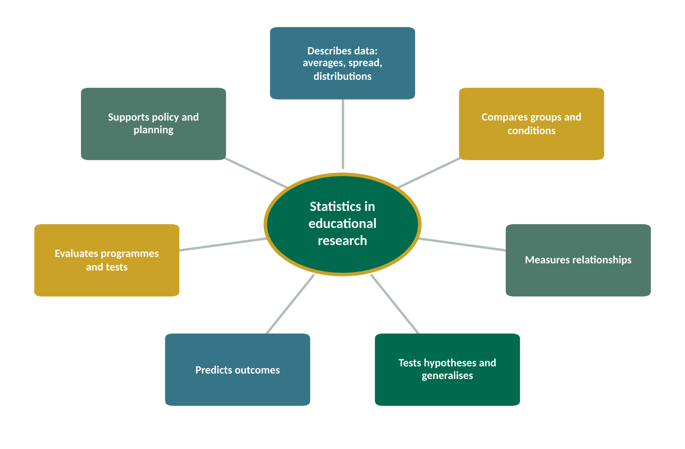</p>
<p><strong>Figure 1.</strong> <em>Functions of statistics in educational
research</em></p>
<ul>
<li><p><strong>Describing</strong> student performance, attendance and
teacher characteristics.</p></li>
<li><p><strong>Measuring</strong> reliability and validity of tests
(correlations, factor analysis).</p></li>
<li><p><strong>Comparing</strong> teaching methods, schools or groups
(t-test, ANOVA).</p></li>
<li><p><strong>Exploring</strong> relationships (correlation) and
<strong>predicting</strong> outcomes (regression).</p></li>
<li><p><strong>Generalising</strong> from samples to populations
(inference).</p></li>
<li><p><strong>Evaluating</strong> programmes and policies.</p></li>
</ul>
<h2 id="contribution-of-educational-statistics-to-improving-education-in-bangladesh">1.3
Contribution of educational statistics to improving education in
Bangladesh</h2>
<div class="box box-bd"><div class="box-label">Bangladesh Context</div>
<p>Statistics underpin planning and accountability in Bangladesh: the
<strong>Annual Primary School Census</strong> (DPE) and
<strong>BANBEIS</strong> statistics guide teacher allocation, school
construction and budgeting; the <strong>National Student Assessment
(NSA)</strong> and <strong>LASI</strong> measure learning outcomes;
public examination statistics (pass rates, GPA-5) inform debates on
quality; household surveys (HIES, MICS) reveal equity gaps by income,
gender and location; and SDG 4 indicators track national commitments.
Weaknesses include delays in publishing data, limited learning-outcome
data at secondary level, inconsistent definitions across agencies, and
limited use of data by schools.</p></div>
<div class="box box-verify"><div class="box-label">Verify Before Use</div>
<p>Check the most recent APSC, BANBEIS and NSA releases for current
indicator values and publication years.</p></div>
<h2 id="basic-terms">1.4 Basic terms</h2>
<div class="table-wrap"><table>

<thead>
<tr class="header">
<th><strong>Term</strong></th>
<th><strong>Meaning</strong></th>
<th><strong>Example</strong></th>
</tr>
</thead>
<tbody>
<tr class="odd">
<td><strong>Population</strong></td>
<td>The entire group of interest</td>
<td>All Grade 8 students in Bangladesh</td>
</tr>
<tr class="even">
<td><strong>Parameter</strong></td>
<td>A numerical characteristic of a population (Greek letters)</td>
<td>Population mean μ, SD σ, correlation ρ</td>
</tr>
<tr class="odd">
<td><strong>Sample</strong></td>
<td>A subset of the population</td>
<td>600 Grade 8 students from 20 schools</td>
</tr>
<tr class="even">
<td><strong>Statistic</strong></td>
<td>A numerical characteristic of a sample (Roman letters)</td>
<td>Sample mean x̄, SD s, correlation r</td>
</tr>
<tr class="odd">
<td><strong>Observation</strong></td>
<td>A single recorded value</td>
<td>Rahim's mathematics score of 68</td>
</tr>
<tr class="even">
<td><strong>Variable</strong></td>
<td>A characteristic that varies across cases</td>
<td>Score, gender, school type</td>
</tr>
<tr class="odd">
<td><strong>Constant</strong></td>
<td>A characteristic that does not vary in the study</td>
<td>All participants are Grade 8</td>
</tr>
<tr class="even">
<td><strong>Data</strong></td>
<td>Collection of observations</td>
<td>Score sheet of 600 students</td>
</tr>
<tr class="odd">
<td><strong>Distribution</strong></td>
<td>The pattern of values and their frequencies</td>
<td>Frequency distribution of scores</td>
</tr>
</tbody>
</table></div>
<p><strong>Table 1.</strong> <em>Basic statistical terms</em></p>
<h3 id="types-of-variables">Types of variables</h3>
<div class="table-wrap"><table>

<thead>
<tr class="header">
<th><strong>Basis</strong></th>
<th><strong>Types</strong></th>
<th><strong>Examples</strong></th>
</tr>
</thead>
<tbody>
<tr class="odd">
<td><strong>Nature</strong></td>
<td>Qualitative (categorical) vs quantitative (numerical)</td>
<td>Religion vs marks</td>
</tr>
<tr class="even">
<td><strong>Values</strong></td>
<td>Discrete (countable) vs continuous (any value within range)</td>
<td>Number of siblings vs height, time</td>
</tr>
<tr class="odd">
<td><strong>Role in research</strong></td>
<td>Independent, dependent, extraneous, moderating, mediating</td>
<td>Method of teaching (IV), achievement (DV)</td>
</tr>
<tr class="even">
<td><strong>Number of categories</strong></td>
<td>Dichotomous, polytomous</td>
<td>Pass/fail; school type</td>
</tr>
</tbody>
</table></div>
<p><strong>Table 2.</strong> <em>Classification of variables</em></p>
<h3 id="types-of-data">Types of data</h3>
<p><strong>Primary</strong> (collected first-hand) versus
<strong>secondary</strong> (from existing sources such as BANBEIS);
<strong>cross-sectional</strong> versus <strong>time-series</strong> or
<strong>longitudinal</strong>; <strong>grouped</strong> versus
<strong>ungrouped</strong>.</p>
<h3 id="scales-of-measurement-of-the-dependent-variable">Scales of
measurement of the dependent variable</h3>
<div class="table-wrap"><table>

<thead>
<tr class="header">
<th><strong>Scale</strong></th>
<th><strong>Properties</strong></th>
<th><strong>Permissible statistics</strong></th>
<th><strong>Example</strong></th>
</tr>
</thead>
<tbody>
<tr class="odd">
<td><strong>Nominal</strong></td>
<td>Identity (categories)</td>
<td>Frequency, mode, chi-square</td>
<td>Division, gender</td>
</tr>
<tr class="even">
<td><strong>Ordinal</strong></td>
<td>Identity + order</td>
<td>Median, percentile, rank correlation, non-parametric tests</td>
<td>Merit position, Likert item</td>
</tr>
<tr class="odd">
<td><strong>Interval</strong></td>
<td>Identity + order + equal intervals; arbitrary zero</td>
<td>Mean, SD, Pearson r, t, F</td>
<td>Standard scores, temperature °C</td>
</tr>
<tr class="even">
<td><strong>Ratio</strong></td>
<td>All of the above + true zero</td>
<td>All statistics including ratios, CV</td>
<td>Age, reaction time, number of correct answers</td>
</tr>
</tbody>
</table></div>
<p><strong>Table 3.</strong> <em>Scales of measurement (Stevens,
1946)</em></p>
<div class="box box-key"><div class="box-label">Key Point</div>
<p>The scale of the <strong>dependent variable</strong> largely
determines the choice of statistical test: interval/ratio DV with
normality → parametric; ordinal or non-normal → non-parametric; nominal
→ chi-square and related tests.</p></div>
<h3 id="distributions-in-statistics">Distributions in statistics</h3>
<p>A <strong>distribution</strong> describes how values are spread. Key
distributions: <strong>frequency</strong> distributions of observed
data; theoretical <strong>probability distributions</strong> (normal,
binomial, t, F, chi-square); and <strong>sampling distributions</strong>
of statistics (Unit 5).</p>
<h2 id="classification-of-statistics">1.5 Classification of
statistics</h2>
<p>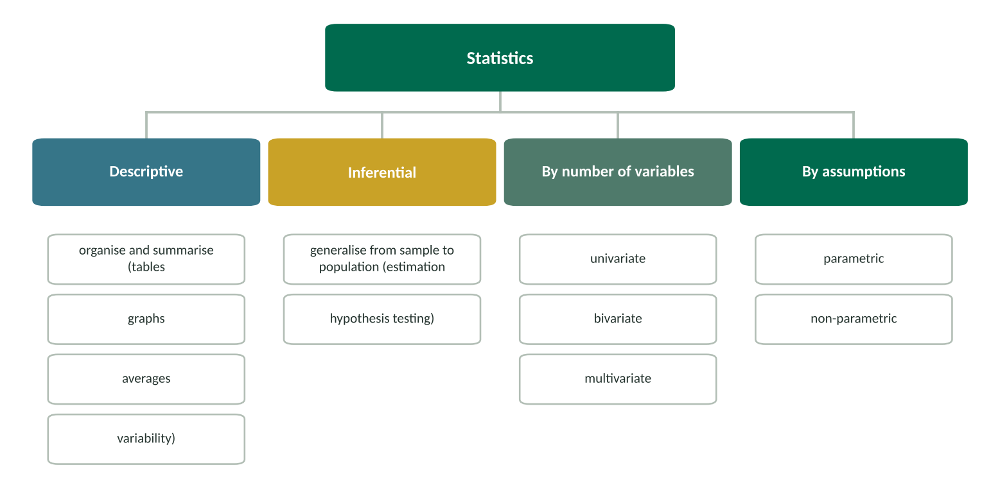</p>
<p><strong>Figure 2.</strong> <em>Classification of statistics</em></p>
<div class="table-wrap"><table>

<thead>
<tr class="header">
<th><strong>Descriptive statistics</strong></th>
<th><strong>Inferential statistics</strong></th>
</tr>
</thead>
<tbody>
<tr class="odd">
<td><strong>Summarise the data at hand</strong></td>
<td>Draw conclusions about a population</td>
</tr>
<tr class="even">
<td><strong>Frequencies, percentages, mean, SD, graphs</strong></td>
<td>Estimation, t, F, chi-square, regression significance</td>
</tr>
<tr class="odd">
<td><strong>No probability statements</strong></td>
<td>Use probability to state confidence or significance</td>
</tr>
<tr class="even">
<td><strong>Example: "The mean score of our sample was
62.4"</strong></td>
<td>Example: "The population mean is likely between 60.1 and 64.7 (95%
CI)"</td>
</tr>
</tbody>
</table></div>
<p><strong>Table 4.</strong> <em>Descriptive versus inferential
statistics</em></p>
<div class="table-wrap"><table>

<thead>
<tr class="header">
<th><strong>Type</strong></th>
<th><strong>Example techniques</strong></th>
<th><strong>Example question</strong></th>
</tr>
</thead>
<tbody>
<tr class="odd">
<td><strong>Univariate</strong></td>
<td>Mean, SD, frequency table</td>
<td>What is the average attendance rate?</td>
</tr>
<tr class="even">
<td><strong>Bivariate</strong></td>
<td>Correlation, t-test, chi-square, simple regression</td>
<td>Is attendance related to achievement?</td>
</tr>
<tr class="odd">
<td><strong>Multivariate</strong></td>
<td>Multiple regression, factorial ANOVA, MANOVA, factor analysis</td>
<td>What predicts achievement when SES, attendance and tutoring are
considered together?</td>
</tr>
</tbody>
</table></div>
<p><strong>Table 5.</strong> <em>Univariate, bivariate and multivariate
analysis</em></p>
<div class="box box-exam"><div class="box-label">Exam Focus</div>
<p>Likely questions: "Define statistics. Discuss its role in educational
research." "Distinguish parameter and statistic; population and sample."
"Explain the scales of measurement with examples." "Distinguish
descriptive and inferential statistics."</p></div>
<h1 id="unit-2-recapitulation-data-organization-summarization-and-presentation">Unit
2: Recapitulation: Data Organization, Summarization and
Presentation</h1><div aria-label="Tools for Unit 2: Recapitulation: Data Organization, Summarization and Presentation" class="unit-tools" role="group"><button aria-label="Listen to Unit 2: Recapitulation: Data Organization, Summarization and Presentation" class="tts-btn" data-target="unit-2-recapitulation-data-organization-summarization-and-presentation" data-tts="unit" type="button"><span aria-hidden="true">▶</span> Listen to this chapter</button><button aria-label="Listen to the summary of Unit 2: Recapitulation: Data Organization, Summarization and Presentation" class="tts-btn" data-target="sum-unit-2-recapitulation-data-organization-summarization-and-presentation" data-tts="summary" type="button"><span aria-hidden="true">▶</span> Listen to summary</button><button class="done-btn" data-unit="unit-2-recapitulation-data-organization-summarization-and-presentation" type="button">Mark as studied</button></div><details class="unit-summary" id="sum-unit-2-recapitulation-data-organization-summarization-and-presentation"><summary>Chapter summary</summary><div class="sum-body"><p>Purposes: organise raw data; reveal the shape, centre and spread; provide the basis for graphs and computations; allow comparison between groups.</p><p><strong>This chapter covers:</strong> Basic terms; Frequency distribution; Graphical representation of scores; Using graphs to determine the characteristics of a distribution.</p><p><strong>Key terms:</strong></p><ul><li>Frequency distribution: A table that shows the number of times (frequency, f) each score or class of scores occurs.</li></ul></div></details><details class="curriculum" open=""><summary><span class="cur-label">What the curriculum says</span><span class="cur-unit">Unit 2: Recapitulation: Data Organization, Summarization and Presentation · 5 contact hours</span></summary><div class="cur-h">Learning outcomes</div><p class="cur-lead">At the end of this unit learners will be able to</p><ol type="a"><li>develop a frequency distribution of different type of data sets</li><li>present the data graphically</li></ol><div class="cur-h">Content</div><ul><li>Basic terms: raw score/data, organized data, data summarization, distribution of measures</li><li>Data organization and summarization: Frequency distribution of scores (table); Meaning, purpose, construction, characteristics and uses (frequencies, percentages)</li><li>Graphical representation of scores: Polygons, histograms, and curves</li><li>Graphs for frequencies, percentages, and proportions</li><li>Use of graphs to determine the characteristics of distribution</li></ul></details>
<h2 id="basic-terms-1">2.1 Basic terms</h2>
<ul>
<li><p><strong>Raw data / raw scores:</strong> data in the form
originally collected, unorganised.</p></li>
<li><p><strong>Organised data:</strong> arranged in order (array) or
grouped into classes.</p></li>
<li><p><strong>Data summarisation:</strong> reducing data to a few
meaningful numbers or tables.</p></li>
<li><p><strong>Distribution of measures:</strong> the pattern of scores
across the range.</p></li>
</ul>
<h2 id="frequency-distribution">2.2 Frequency distribution</h2>
<div class="box box-def"><div class="box-label">Definition</div>
<p><strong>Frequency distribution:</strong> A table that shows the
number of times (frequency, f) each score or class of scores occurs. It
may also show relative frequencies (proportions or percentages) and
cumulative frequencies.</p></div>
<p><strong>Purposes:</strong> organise raw data; reveal the shape,
centre and spread; provide the basis for graphs and computations; allow
comparison between groups.</p>
<h3 id="steps-in-constructing-a-grouped-frequency-distribution">Steps in
constructing a grouped frequency distribution</h3>
<blockquote class="mcq-options">
<p><strong>1.</strong> Find the <strong>range</strong> = highest score −
lowest score.</p>
<p><strong>2.</strong> Decide the number of classes (usually 5 to 20;
Sturges' rule k ≈ 1 + 3.322 log₁₀N).</p>
<p><strong>3.</strong> Determine the <strong>class interval</strong> (i)
≈ range ÷ number of classes; choose a convenient size (2, 3, 5, 10).</p>
<p><strong>4.</strong> Write class limits starting from a multiple of i
at or below the lowest score.</p>
<p><strong>5.</strong> Tally scores and count frequencies.</p>
<p><strong>6.</strong> Add columns for midpoints (x), cumulative
frequency (cf) and percentages as needed.</p>
</blockquote>
<div class="box box-example"><div class="box-label">Worked Example</div>
<p>Marks of 50 M.Ed students were grouped with i = 10:</p></div>
<div class="table-wrap"><table style="width:100%;">

<thead>
<tr class="header">
<th><strong>Class</strong></th>
<th><strong>Exact limits</strong></th>
<th><strong>Midpoint (x)</strong></th>
<th><strong>f</strong></th>
<th><strong>cf</strong></th>
<th><strong>%</strong></th>
</tr>
</thead>
<tbody>
<tr class="odd">
<td><strong>30-39</strong></td>
<td>29.5-39.5</td>
<td>34.5</td>
<td>2</td>
<td>2</td>
<td>4</td>
</tr>
<tr class="even">
<td><strong>40-49</strong></td>
<td>39.5-49.5</td>
<td>44.5</td>
<td>5</td>
<td>7</td>
<td>10</td>
</tr>
<tr class="odd">
<td><strong>50-59</strong></td>
<td>49.5-59.5</td>
<td>54.5</td>
<td>9</td>
<td>16</td>
<td>18</td>
</tr>
<tr class="even">
<td><strong>60-69</strong></td>
<td>59.5-69.5</td>
<td>64.5</td>
<td>14</td>
<td>30</td>
<td>28</td>
</tr>
<tr class="odd">
<td><strong>70-79</strong></td>
<td>69.5-79.5</td>
<td>74.5</td>
<td>10</td>
<td>40</td>
<td>20</td>
</tr>
<tr class="even">
<td><strong>80-89</strong></td>
<td>79.5-89.5</td>
<td>84.5</td>
<td>6</td>
<td>46</td>
<td>12</td>
</tr>
<tr class="odd">
<td><strong>90-99</strong></td>
<td>89.5-99.5</td>
<td>94.5</td>
<td>4</td>
<td>50</td>
<td>8</td>
</tr>
<tr class="even">
<td><strong>Total</strong></td>
<td></td>
<td></td>
<td>50</td>
<td></td>
<td>100</td>
</tr>
</tbody>
</table></div>
<p><strong>Table 6.</strong> <em>Grouped frequency distribution of 50
students' marks</em></p>
<p><strong>Characteristics</strong> of a good frequency distribution:
classes are mutually exclusive and exhaustive, of equal width, neither
too many nor too few, and clearly labelled.</p>
<h2 id="graphical-representation-of-scores">2.3 Graphical representation
of scores</h2>
<div class="table-wrap"><table>

<thead>
<tr class="header">
<th><strong>Graph</strong></th>
<th><strong>Construction</strong></th>
<th><strong>Best used for</strong></th>
</tr>
</thead>
<tbody>
<tr class="odd">
<td><strong>Histogram</strong></td>
<td>Adjacent bars over exact class limits; height = frequency</td>
<td>Continuous grouped data; shape of distribution</td>
</tr>
<tr class="even">
<td><strong>Frequency polygon</strong></td>
<td>Points at midpoints joined by lines, closed at both ends</td>
<td>Comparing two or more distributions</td>
</tr>
<tr class="odd">
<td><strong>Frequency curve (smoothed)</strong></td>
<td>Smoothed polygon</td>
<td>Showing general shape</td>
</tr>
<tr class="even">
<td><strong>Ogive (cumulative frequency curve)</strong></td>
<td>Cumulative frequencies plotted at upper exact limits</td>
<td>Finding median, quartiles, percentiles graphically</td>
</tr>
<tr class="odd">
<td><strong>Bar chart</strong></td>
<td>Separate bars for categories</td>
<td>Nominal/ordinal data (e.g., enrolment by division)</td>
</tr>
<tr class="even">
<td><strong>Pie chart</strong></td>
<td>Sectors proportional to percentages</td>
<td>Parts of a whole (e.g., budget shares)</td>
</tr>
<tr class="odd">
<td><strong>Line graph</strong></td>
<td>Points over time joined</td>
<td>Trends (e.g., SSC pass rates over years)</td>
</tr>
<tr class="even">
<td><strong>Box plot</strong></td>
<td>Median, quartiles, whiskers, outliers</td>
<td>Comparing distributions, spotting outliers</td>
</tr>
<tr class="odd">
<td><strong>Scatter plot</strong></td>
<td>Points for paired values</td>
<td>Relationship between two variables</td>
</tr>
</tbody>
</table></div>
<p><strong>Table 7.</strong> <em>Common graphs and their uses</em></p>
<p>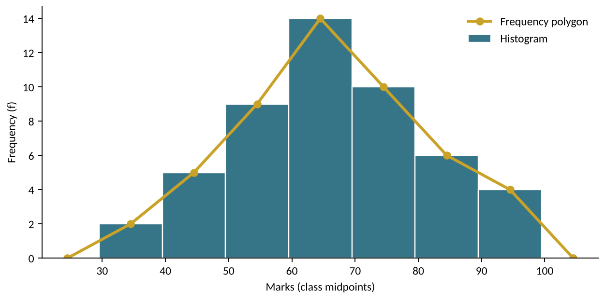</p>
<p><strong>Figure 3.</strong> <em>Histogram and frequency polygon for
the 50 students' marks</em></p>
<h3 id="graphs-for-frequencies-percentages-and-proportions">Graphs for
frequencies, percentages and proportions</h3>
<p>Frequencies, percentages and proportions can all be graphed;
percentages and proportions allow comparison between groups of different
sizes (e.g., comparing pass rates of boys and girls when group sizes
differ).</p>
<h2 id="using-graphs-to-determine-the-characteristics-of-a-distribution">2.4
Using graphs to determine the characteristics of a distribution</h2>
<p>Graphs reveal four characteristics: <strong>central tendency</strong>
(where scores cluster), <strong>variability</strong> (spread),
<strong>skewness</strong> (symmetry) and <strong>kurtosis</strong>
(peakedness), as well as <strong>modality</strong> (unimodal, bimodal)
and <strong>outliers</strong>.</p>
<p>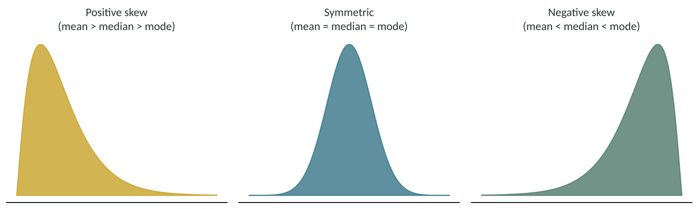</p>
<p><strong>Figure 4.</strong> <em>Symmetric and skewed
distributions</em></p>
<div class="box box-tip"><div class="box-label">Study tip</div><p>Graph SSC results of two schools on the same axes as frequency polygons and describe differences in centre, spread and shape before you compute any statistic. "Always plot your data first" (Tukey's exploratory data analysis).</p></div>
<div class="box box-exam"><div class="box-label">Exam Focus</div>
<p>Expect: "Construct a frequency distribution from raw scores and draw
a histogram and frequency polygon." "What are the uses of an ogive?"
"How do graphs help determine the characteristics of a
distribution?"</p></div>
<h1 id="unit-3-recapitulation-univariate-measures-central-tendency-and-variability">Unit
3: Recapitulation: Univariate Measures: Central Tendency and
Variability</h1><div aria-label="Tools for Unit 3: Recapitulation: Univariate Measures: Central Tendency and Variability" class="unit-tools" role="group"><button aria-label="Listen to Unit 3: Recapitulation: Univariate Measures: Central Tendency and Variability" class="tts-btn" data-target="unit-3-recapitulation-univariate-measures-central-tendency-and-variability" data-tts="unit" type="button"><span aria-hidden="true">▶</span> Listen to this chapter</button><button aria-label="Listen to the summary of Unit 3: Recapitulation: Univariate Measures: Central Tendency and Variability" class="tts-btn" data-target="sum-unit-3-recapitulation-univariate-measures-central-tendency-and-variability" data-tts="summary" type="button"><span aria-hidden="true">▶</span> Listen to summary</button><button class="done-btn" data-unit="unit-3-recapitulation-univariate-measures-central-tendency-and-variability" type="button">Mark as studied</button></div><details class="unit-summary" id="sum-unit-3-recapitulation-univariate-measures-central-tendency-and-variability"><summary>Chapter summary</summary><div class="sum-body"><p>Central tendency is a single value that represents the centre or typical value of a distribution. It summarises data, allows comparison between groups and forms the basis for further analysis.</p><p><strong>This chapter covers:</strong> Central tendency: meaning, use and importance; Measures of central tendency; Variability: meaning, use and importance; Measures of dispersion; Standard scores.</p><p><strong>Key points to remember:</strong></p><ul><li>In a normal distribution, approximately 68.26% of scores lie within ±1 SD, 95.44% within ±2 SD and 99.74% within ±3 SD of the mean.</li></ul></div></details><details class="curriculum" open=""><summary><span class="cur-label">What the curriculum says</span><span class="cur-unit">Unit 3: Recapitulation: Univariate Measures: Central Tendency and Variability · 5 contact hours</span></summary><div class="cur-h">Learning outcomes</div><p class="cur-lead">At the end of this unit learners will be able to</p><ol type="a"><li>measure central tendency of given data</li><li>measure dispersion of given data</li><li>use central tendency and dispersion in research</li></ol><div class="cur-h">Content</div><ul><li>Central tendency: meaning, use and importance</li><li>Measures of central tendency: Arithmetic mean, median and mode</li><li>Variability / dispersion in scores: meaning, use and importance</li><li>Measures of dispersion: Range, quartile, semi inter-quartile range, mean deviation, standard deviation, standard score</li></ul></details>
<h2 id="central-tendency-meaning-use-and-importance">3.1 Central
tendency: meaning, use and importance</h2>
<p><strong>Central tendency</strong> is a single value that represents
the centre or typical value of a distribution. It summarises data,
allows comparison between groups and forms the basis for further
analysis.</p>
<h2 id="measures-of-central-tendency">3.2 Measures of central
tendency</h2>
<div class="box box-note"><p>Ungrouped mean x̄ = Σx / N</p>
<p>Grouped mean x̄ = Σfx / N, or by assumed mean: x̄ = A + (Σfd / N) ×
i</p>
<p>Grouped median Md = L + [(N/2 − cf) / f] × i</p>
<p>Grouped mode Mo = L + [(f₁ − f₀) / (2f₁ − f₀ − f₂)] × i</p>
<p>Empirical relation (moderately skewed): Mode ≈ 3 Median − 2
Mean</p></div>
<p>where L = exact lower limit of the median (or modal) class, cf =
cumulative frequency below that class, f = frequency of that class, f₁ =
frequency of the modal class, f₀ and f₂ = frequencies of the preceding
and following classes, and i = class interval.</p>
<div class="box box-example"><div class="box-label">Worked Example</div>
<p>For the table in Unit 2 (N = 50): <strong>Mean:</strong> Σfx = 3,315,
so x̄ = 3315 ÷ 50 = <strong>66.30</strong>. Using assumed mean A = 64.5
with d = (x − A)/i: Σfd = 9, so x̄ = 64.5 + (9/50) × 10 =
<strong>66.30</strong>. <strong>Median:</strong> N/2 = 25; median class
60-69 (cf below = 16, f = 14, L = 59.5): Md = 59.5 + [(25 − 16)/14] × 10
= <strong>65.93</strong>. <strong>Mode:</strong> modal class 60-69 (f₁ =
14, f₀ = 9, f₂ = 10): Mo = 59.5 + [(14 − 9)/(28 − 9 − 10)] × 10 = 59.5 +
5.56 = <strong>65.06</strong>.</p></div>
<div class="table-wrap"><table>

<thead>
<tr class="header">
<th><strong>Measure</strong></th>
<th><strong>Strengths</strong></th>
<th><strong>Limitations</strong></th>
<th><strong>Use when</strong></th>
</tr>
</thead>
<tbody>
<tr class="odd">
<td><strong>Mean</strong></td>
<td>Uses all scores; algebraically manipulable; stable across
samples</td>
<td>Affected by extreme scores</td>
<td>Interval/ratio data, symmetric distributions</td>
</tr>
<tr class="even">
<td><strong>Median</strong></td>
<td>Not affected by extremes; usable with open-ended classes</td>
<td>Ignores actual values</td>
<td>Skewed data (income), ordinal data</td>
</tr>
<tr class="odd">
<td><strong>Mode</strong></td>
<td>Easy; usable with nominal data</td>
<td>May not exist or be multiple; unstable</td>
<td>Nominal data; most common category</td>
</tr>
</tbody>
</table></div>
<p><strong>Table 8.</strong> <em>Comparing mean, median and
mode</em></p>
<h2 id="variability-meaning-use-and-importance">3.3 Variability:
meaning, use and importance</h2>
<p><strong>Variability (dispersion)</strong> is the extent to which
scores differ from each other and from the centre. Two classes may have
the same mean (60) but very different spreads; a teacher's strategy for
a homogeneous class differs from that for a heterogeneous one.
Variability is also the basis of reliability, correlation and
inferential statistics.</p>
<h2 id="measures-of-dispersion">3.4 Measures of dispersion</h2>
<div class="box box-note"><p>Range = H − L</p>
<p>Quartile deviation (semi-interquartile range) Q = (Q₃ − Q₁) / 2,
where Q₁ = L + [(N/4 − cf)/f] × i and Q₃ = L + [(3N/4 − cf)/f] × i</p>
<p>Mean deviation MD = Σ|x − x̄| / N</p>
<p>Standard deviation (grouped, assumed mean) σ = i × √[Σfd²/N −
(Σfd/N)²]</p>
<p>Coefficient of variation CV = (σ / x̄) × 100</p></div>
<div class="box box-example"><div class="box-label">Worked Example</div>
<p>For the same data: <strong>Q₁:</strong> N/4 = 12.5; class 50-59 (L =
49.5, cf = 7, f = 9): Q₁ = 49.5 + (5.5/9) × 10 = 55.61.
<strong>Q₃:</strong> 3N/4 = 37.5; class 70-79 (L = 69.5, cf = 30, f =
10): Q₃ = 69.5 + 7.5 = 77.00. Q = (77.00 − 55.61)/2 =
<strong>10.69</strong>. <strong>SD:</strong> Σfd = 9, Σfd² = 117: σ = 10
× √(117/50 − 0.0324) = 10 × √2.3076 = <strong>15.19</strong>. CV =
15.19/66.3 × 100 = <strong>22.9%</strong>.</p></div>
<div class="table-wrap"><table>

<thead>
<tr class="header">
<th><strong>Measure</strong></th>
<th><strong>Merits</strong></th>
<th><strong>Demerits</strong></th>
</tr>
</thead>
<tbody>
<tr class="odd">
<td><strong>Range</strong></td>
<td>Simple, quick</td>
<td>Based on two extreme values; unstable</td>
</tr>
<tr class="even">
<td><strong>Quartile deviation</strong></td>
<td>Not affected by extremes; for open-ended data</td>
<td>Ignores 50% of data</td>
</tr>
<tr class="odd">
<td><strong>Mean deviation</strong></td>
<td>Uses all scores</td>
<td>Ignores signs; less used in inference</td>
</tr>
<tr class="even">
<td><strong>Standard deviation</strong></td>
<td>Uses all scores; mathematically sound; basis for inference</td>
<td>Affected by extremes; harder to compute by hand</td>
</tr>
</tbody>
</table></div>
<p><strong>Table 9.</strong> <em>Comparing measures of
dispersion</em></p>
<h2 id="standard-scores">3.5 Standard scores</h2>
<p>Raw scores from different tests cannot be compared directly.
<strong>Standard scores</strong> express a score's position relative to
the mean in SD units.</p>
<div class="box box-note"><p>z = (X − x̄) / s</p>
<p>T = 50 + 10z</p>
<p>Stanine ≈ 5 + 2z (rounded, range 1 to 9)</p>
<p>Deviation IQ = 100 + 15z</p></div>
<div class="box box-example"><div class="box-label">Worked Example</div>
<p>Rina scored 75 in Bangla (class mean 60, SD 10) and 80 in mathematics
(mean 70, SD 20). z(Bangla) = (75 − 60)/10 = <strong>1.5</strong>;
z(Maths) = (80 − 70)/20 = <strong>0.5</strong>. Relative to her class,
Rina performed better in Bangla, despite a lower raw score. T-scores: 65
and 55.</p></div>
<p>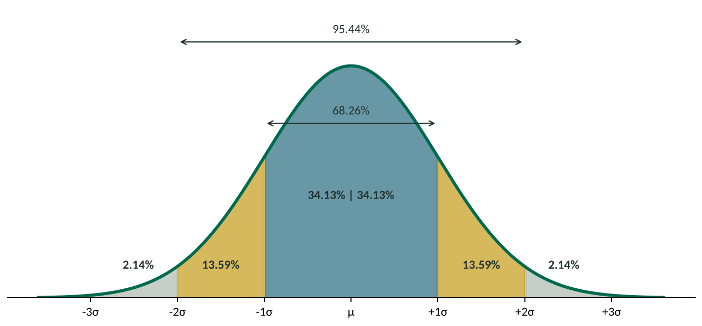</p>
<p><strong>Figure 5.</strong> <em>The normal curve with standard
deviation areas</em></p>
<div class="box box-key"><div class="box-label">Key Point</div>
<p>In a normal distribution, approximately <strong>68.26%</strong> of
scores lie within ±1 SD, <strong>95.44%</strong> within ±2 SD and
<strong>99.74%</strong> within ±3 SD of the mean.</p></div>
<div class="box box-exam"><div class="box-label">Exam Focus</div>
<p>Expect: "Compute the mean, median and mode from a grouped
distribution." "Calculate the quartile deviation and standard
deviation." "Compare measures of central tendency and variability."
"What is a standard score? Convert raw scores into z and T-scores and
interpret."</p></div>
<h1 id="unit-4-bivariate-measures-study-of-relationship">Unit 4:
Bivariate Measures: Study of Relationship</h1><div aria-label="Tools for Unit 4: Bivariate Measures: Study of Relationship" class="unit-tools" role="group"><button aria-label="Listen to Unit 4: Bivariate Measures: Study of Relationship" class="tts-btn" data-target="unit-4-bivariate-measures-study-of-relationship" data-tts="unit" type="button"><span aria-hidden="true">▶</span> Listen to this chapter</button><button aria-label="Listen to the summary of Unit 4: Bivariate Measures: Study of Relationship" class="tts-btn" data-target="sum-unit-4-bivariate-measures-study-of-relationship" data-tts="summary" type="button"><span aria-hidden="true">▶</span> Listen to summary</button><button class="done-btn" data-unit="unit-4-bivariate-measures-study-of-relationship" type="button">Mark as studied</button></div><details class="unit-summary" id="sum-unit-4-bivariate-measures-study-of-relationship"><summary>Chapter summary</summary><div class="sum-body"><p>Educational questions often concern relationships: Is time spent reading related to vocabulary? Do SSC results relate to university performance?</p><p><strong>This chapter covers:</strong> Importance of studying relationships; Meaning of relationship among variables; Correlation and causation; Types of correlation; Measures of correlation: methods, conditions and application; Pearson's product-moment method; Spearman's rank-difference method.</p></div></details><details class="curriculum" open=""><summary><span class="cur-label">What the curriculum says</span><span class="cur-unit">Unit 4: Bivariate Measures: Study of Relationship · 5 contact hours</span></summary><div class="cur-h">Learning outcomes</div><p class="cur-lead">At the end of this unit learners will be able to</p><ol type="a"><li>measure the relationships between and/or among two or more behavioral data</li><li>use different methods of correlation based on given conditions</li></ol><div class="cur-h">Content</div><ul><li>Importance of studying relationship among variables</li><li>Meaning of relationship among variables</li><li>Correlation and Causation</li><li>Simple/bi-variate correlation and multiple correlation; positive, negative and Zero correlation</li><li>Measures of correlation: coefficient of correlation, methods, conditions, and application</li><li>Pearson‘s product moment method, conditions, and use</li><li>Spearman‘s rank difference method, conditions, and use</li></ul></details>
<h2 id="importance-of-studying-relationships">4.1 Importance of studying
relationships</h2>
<p>Educational questions often concern relationships: Is time spent
reading related to vocabulary? Do SSC results relate to university
performance? Is teacher experience related to student achievement?
Correlation helps in prediction, test validation (criterion validity),
reliability estimation and theory building.</p>
<h2 id="meaning-of-relationship-among-variables">4.2 Meaning of
relationship among variables</h2>
<p>Two variables are related (correlated) when changes in one tend to be
accompanied by systematic changes in the other. The <strong>coefficient
of correlation</strong> expresses the direction (+ or −) and strength (0
to 1) of the relationship.</p>
<p>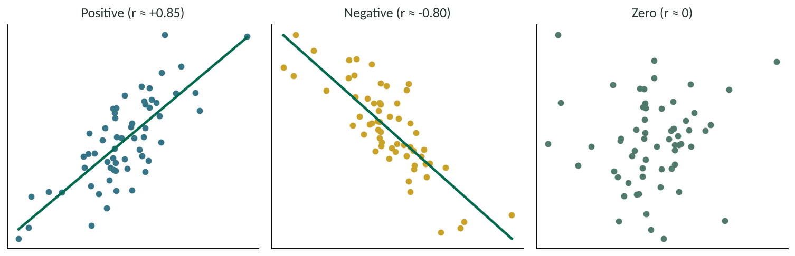</p>
<p><strong>Figure 6.</strong> <em>Positive, negative and zero
correlations</em></p>
<h2 id="correlation-and-causation">4.3 Correlation and causation</h2>
<p>Correlation does <strong>not</strong> imply causation. A correlation
between X and Y may arise because X causes Y, Y causes X (reverse
causation), a third variable causes both (spurious correlation), or by
chance. For example, the number of private tutors and SSC GPA may
correlate because both depend on family income.</p>
<p>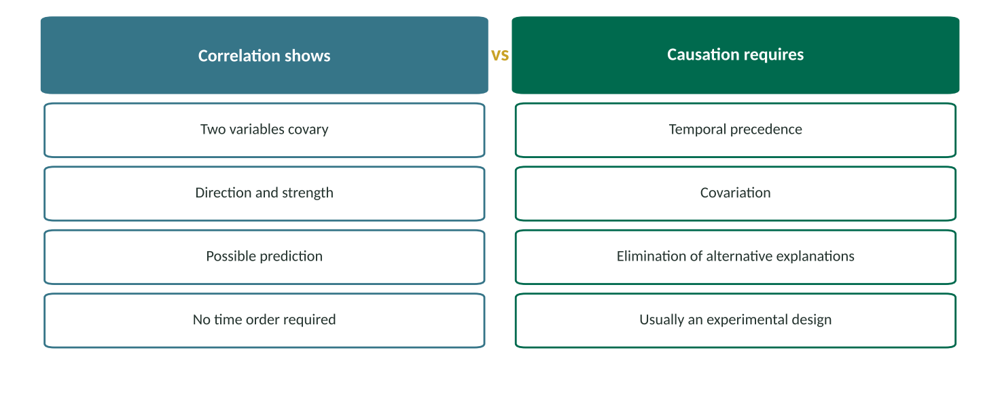</p>
<p><strong>Figure 7.</strong> <em>Correlation versus causation</em></p>
<h2 id="types-of-correlation">4.4 Types of correlation</h2>
<ul>
<li><p><strong>Simple (bivariate) correlation:</strong> between two
variables.</p></li>
<li><p><strong>Multiple correlation (R):</strong> between one variable
and a combination of two or more others.</p></li>
<li><p><strong>Partial correlation:</strong> between two variables with
the effect of a third removed.</p></li>
<li><p><strong>Positive:</strong> both increase together;
<strong>negative:</strong> one increases as the other decreases;
<strong>zero:</strong> no linear relationship.</p></li>
<li><p><strong>Linear</strong> versus <strong>curvilinear</strong>
(e.g., anxiety and performance follow an inverted U,
Yerkes-Dodson).</p></li>
</ul>
<h2 id="measures-of-correlation-methods-conditions-and-application">4.5
Measures of correlation: methods, conditions and application</h2>
<div class="table-wrap"><table>

<thead>
<tr class="header">
<th><strong>Coefficient</strong></th>
<th><strong>Variables</strong></th>
<th><strong>Conditions</strong></th>
</tr>
</thead>
<tbody>
<tr class="odd">
<td><strong>Pearson's r</strong></td>
<td>Both interval/ratio</td>
<td>Linear, approximately normal, no extreme outliers,
homoscedastic</td>
</tr>
<tr class="even">
<td><strong>Spearman's rho (ρ)</strong></td>
<td>Both ordinal (ranks) or non-normal</td>
<td>Monotonic relationship</td>
</tr>
<tr class="odd">
<td><strong>Kendall's tau</strong></td>
<td>Ordinal, small samples with many ties</td>
<td>Monotonic</td>
</tr>
<tr class="even">
<td><strong>Point-biserial (r_pb)</strong></td>
<td>One continuous, one true dichotomy</td>
<td>Item-total correlation for MCQ items</td>
</tr>
<tr class="odd">
<td><strong>Biserial</strong></td>
<td>One continuous, one artificial dichotomy</td>
<td>Pass/fail created from scores</td>
</tr>
<tr class="even">
<td><strong>Phi (φ)</strong></td>
<td>Two dichotomies</td>
<td>2 × 2 tables</td>
</tr>
<tr class="odd">
<td><strong>Contingency coefficient (C)</strong></td>
<td>Two nominal variables</td>
<td>From chi-square</td>
</tr>
</tbody>
</table></div>
<p><strong>Table 10.</strong> <em>Choosing a correlation
coefficient</em></p>
<h2 id="pearsons-product-moment-method">4.6 Pearson's product-moment
method</h2>
<div class="box box-note"><p>r = Σ(x − x̄)(y − ȳ) / √[Σ(x − x̄)² · Σ(y − ȳ)²]</p>
<p>Raw-score formula: r = [NΣXY − ΣXΣY] / √{[NΣX² − (ΣX)²][NΣY² −
(ΣY)²]}</p></div>
<p><strong>Conditions:</strong> interval or ratio data; linear
relationship; paired observations; approximately normal distributions;
homoscedasticity; independent pairs.</p>
<div class="box box-example"><div class="box-label">Worked Example</div>
<p>Six students' class-test scores (X) and final exam scores
(Y):</p></div>
<div class="table-wrap"><table>

<thead>
<tr class="header">
<th><strong>Student</strong></th>
<th><strong>X</strong></th>
<th><strong>Y</strong></th>
<th><strong>x = X − 57.5</strong></th>
<th><strong>y = Y − 53</strong></th>
<th><strong>xy</strong></th>
<th><strong>x²</strong></th>
<th><strong>y²</strong></th>
</tr>
</thead>
<tbody>
<tr class="odd">
<td><strong>1</strong></td>
<td>45</td>
<td>40</td>
<td>−12.5</td>
<td>−13</td>
<td>162.5</td>
<td>156.25</td>
<td>169</td>
</tr>
<tr class="even">
<td><strong>2</strong></td>
<td>50</td>
<td>48</td>
<td>−7.5</td>
<td>−5</td>
<td>37.5</td>
<td>56.25</td>
<td>25</td>
</tr>
<tr class="odd">
<td><strong>3</strong></td>
<td>55</td>
<td>52</td>
<td>−2.5</td>
<td>−1</td>
<td>2.5</td>
<td>6.25</td>
<td>1</td>
</tr>
<tr class="even">
<td><strong>4</strong></td>
<td>60</td>
<td>50</td>
<td>2.5</td>
<td>−3</td>
<td>−7.5</td>
<td>6.25</td>
<td>9</td>
</tr>
<tr class="odd">
<td><strong>5</strong></td>
<td>65</td>
<td>62</td>
<td>7.5</td>
<td>9</td>
<td>67.5</td>
<td>56.25</td>
<td>81</td>
</tr>
<tr class="even">
<td><strong>6</strong></td>
<td>70</td>
<td>66</td>
<td>12.5</td>
<td>13</td>
<td>162.5</td>
<td>156.25</td>
<td>169</td>
</tr>
<tr class="odd">
<td><strong>Σ</strong></td>
<td>345</td>
<td>318</td>
<td>0</td>
<td>0</td>
<td>425</td>
<td>437.5</td>
<td>454</td>
</tr>
</tbody>
</table></div>
<p><strong>Table 11.</strong> <em>Computation of Pearson's r</em></p>
<p>r = 425 / √(437.5 × 454) = 425 / √198,625 = 425 / 445.67 =
<strong>0.95</strong>. A very strong positive correlation: students who
did well in class tests also did well in the final.</p>
<h3 id="testing-the-significance-of-r">Testing the significance of
r</h3>
<div class="box box-note">t = r √(N − 2) / √(1 − r²), df = N − 2</div>
<p>For r = 0.95, N = 6: t = 0.95 × 2 / √(0.0975) = 1.90 / 0.312 = 6.09
&gt; 2.776 (critical t at df = 4, α = .05 two-tailed), so r is
significant.</p>
<h2 id="spearmans-rank-difference-method">4.7 Spearman's rank-difference
method</h2>
<div class="box box-note">ρ = 1 − [6 Σd² / N(N² − 1)], where d = difference between paired
ranks</div>
<p><strong>Conditions:</strong> ordinal data or scores converted to
ranks; monotonic relationship; useful when data are skewed or have
outliers; tied ranks receive the average rank.</p>
<div class="box box-example"><div class="box-label">Worked Example</div>
<p>Two judges rank six debaters:</p></div>
<div class="table-wrap"><table>

<thead>
<tr class="header">
<th><strong>Debater</strong></th>
<th><strong>Judge 1 rank</strong></th>
<th><strong>Judge 2 rank</strong></th>
<th><strong>d</strong></th>
<th><strong>d²</strong></th>
</tr>
</thead>
<tbody>
<tr class="odd">
<td><strong>A</strong></td>
<td>1</td>
<td>2</td>
<td>−1</td>
<td>1</td>
</tr>
<tr class="even">
<td><strong>B</strong></td>
<td>2</td>
<td>1</td>
<td>1</td>
<td>1</td>
</tr>
<tr class="odd">
<td><strong>C</strong></td>
<td>3</td>
<td>4</td>
<td>−1</td>
<td>1</td>
</tr>
<tr class="even">
<td><strong>D</strong></td>
<td>4</td>
<td>3</td>
<td>1</td>
<td>1</td>
</tr>
<tr class="odd">
<td><strong>E</strong></td>
<td>5</td>
<td>6</td>
<td>−1</td>
<td>1</td>
</tr>
<tr class="even">
<td><strong>F</strong></td>
<td>6</td>
<td>5</td>
<td>1</td>
<td>1</td>
</tr>
<tr class="odd">
<td><strong>Σ</strong></td>
<td></td>
<td></td>
<td></td>
<td>6</td>
</tr>
</tbody>
</table></div>
<p><strong>Table 12.</strong> <em>Computation of Spearman's rho</em></p>
<p>ρ = 1 − [6 × 6 / (6 × 35)] = 1 − 36/210 = 1 − 0.171 =
<strong>0.83</strong>: strong agreement between judges.</p>
<div class="box box-critical"><div class="box-label">Critical Perspective</div>
<p>Correlations are affected by <strong>restriction of range</strong>
(correlating SSC GPA with university GPA among admitted students only
underestimates the true relationship), <strong>outliers</strong>,
<strong>non-linearity</strong>, and <strong>heterogeneous
subgroups</strong>. Always inspect the scatter plot.</p></div>
<div class="box box-exam"><div class="box-label">Exam Focus</div>
<p>Expect: "Distinguish correlation and causation." "Compute Pearson's r
from given data and test its significance." "Compute Spearman's rho and
interpret." "State the conditions for using Pearson's and Spearman's
methods."</p></div>
<h1 id="unit-5-sampling-distribution-and-its-use">Unit 5: Sampling
Distribution and its Use</h1><div aria-label="Tools for Unit 5: Sampling Distribution and its Use" class="unit-tools" role="group"><button aria-label="Listen to Unit 5: Sampling Distribution and its Use" class="tts-btn" data-target="unit-5-sampling-distribution-and-its-use" data-tts="unit" type="button"><span aria-hidden="true">▶</span> Listen to this chapter</button><button aria-label="Listen to the summary of Unit 5: Sampling Distribution and its Use" class="tts-btn" data-target="sum-unit-5-sampling-distribution-and-its-use" data-tts="summary" type="button"><span aria-hidden="true">▶</span> Listen to summary</button><button class="done-btn" data-unit="unit-5-sampling-distribution-and-its-use" type="button">Mark as studied</button></div><details class="unit-summary" id="sum-unit-5-sampling-distribution-and-its-use"><summary>Chapter summary</summary><div class="sum-body"><p>The sampling distribution is the bridge between descriptive statistics and inference. It tells us how much a sample statistic is expected to differ from the population parameter ( sampling error ) and allows us to compute probabilities, confidence intervals and significance tests.</p><p><strong>This chapter covers:</strong> Concept, role and use of sampling distribution; Types of sampling distributions; The central limit theorem and properties of normality; Distribution of sample means and standard error; Normal and standard normal distribution.</p><p><strong>Key terms:</strong></p><ul><li>Sampling distribution: The probability distribution of a statistic (such as the mean) obtained from all possible samples of a given size drawn from a population.</li><li>Central limit theorem (CLT): For samples of size n drawn randomly from any population with mean μ and finite standard deviation σ, the sampling distribution of the mean approaches a normal distribution with mean μ and standard deviation σ/√n as…</li></ul><p><strong>Key points to remember:</strong></p><ul><li>The standard error (variability of a statistic across samples) is different from the standard deviation (variability of individual scores) and from the standard error of measurement (variability of an individual's observed scores around the true score in test theory).</li></ul></div></details><details class="curriculum" open=""><summary><span class="cur-label">What the curriculum says</span><span class="cur-unit">Unit 5: Sampling Distribution and its Use · 5 contact hours</span></summary><div class="cur-h">Learning outcomes</div><p class="cur-lead">At the end of this unit learners will be able to</p><ol type="a"><li>describe concept and uses of sampling distribution in research</li><li>calculate different sampling distributions</li></ol><div class="cur-h">Content</div><ul><li>Concept, role and use of sampling distribution</li><li>Different types of sampling distribution: Mean, Median, Mean difference; sample correlation</li></ul><div class="cur-sub">coefficient, sample variance</div><ul><li>Central limit theorem and properties of normality</li><li>Distribution of sample means and its properties; Standard error (measure of uncertainty)</li><li>Normal distribution, standard normal distribution, application of normal distribution in practical problem</li></ul></details>
<h2 id="concept-role-and-use-of-sampling-distribution">5.1 Concept, role
and use of sampling distribution</h2>
<div class="box box-def"><div class="box-label">Definition</div>
<p><strong>Sampling distribution:</strong> The probability distribution
of a statistic (such as the mean) obtained from all possible samples of
a given size drawn from a population. It shows how a statistic varies
from sample to sample due to chance.</p></div>
<p>The sampling distribution is the bridge between descriptive
statistics and inference. It tells us how much a sample statistic is
expected to differ from the population parameter (<strong>sampling
error</strong>) and allows us to compute probabilities, confidence
intervals and significance tests.</p>
<p>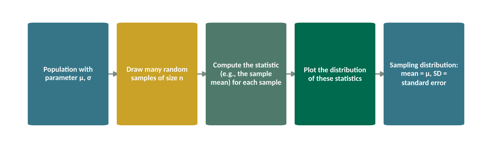</p>
<p><strong>Figure 8.</strong> <em>From population to sampling
distribution</em></p>
<h2 id="types-of-sampling-distributions">5.2 Types of sampling
distributions</h2>
<div class="table-wrap"><table>

<thead>
<tr class="header">
<th><strong>Statistic</strong></th>
<th><strong>Standard error (SE)</strong></th>
<th><strong>Note</strong></th>
</tr>
</thead>
<tbody>
<tr class="odd">
<td><strong>Mean (x̄)</strong></td>
<td>SE = σ / √n (estimated s / √n)</td>
<td>Most widely used</td>
</tr>
<tr class="even">
<td><strong>Median</strong></td>
<td>SE ≈ 1.253 σ / √n</td>
<td>Larger than SE of mean for normal data</td>
</tr>
<tr class="odd">
<td><strong>Difference between two means</strong></td>
<td>SE = √(σ₁²/n₁ + σ₂²/n₂)</td>
<td>Basis of the t-test</td>
</tr>
<tr class="even">
<td><strong>Proportion (p)</strong></td>
<td>SE = √[p(1 − p)/n]</td>
<td>Surveys</td>
</tr>
<tr class="odd">
<td><strong>Correlation coefficient (r)</strong></td>
<td>SE ≈ (1 − ρ²) / √n; Fisher's z' transformation with SE = 1 / √(n −
3)</td>
<td>Testing and CIs for r</td>
</tr>
<tr class="even">
<td><strong>Variance (s²)</strong></td>
<td>Related to chi-square distribution with n − 1 df</td>
<td>Testing variances</td>
</tr>
</tbody>
</table></div>
<p><strong>Table 13.</strong> <em>Common sampling distributions and
their standard errors</em></p>
<h2 id="the-central-limit-theorem-and-properties-of-normality">5.3 The
central limit theorem and properties of normality</h2>
<div class="box box-def"><div class="box-label">Definition</div>
<p><strong>Central limit theorem (CLT):</strong> For samples of size n
drawn randomly from any population with mean μ and finite standard
deviation σ, the sampling distribution of the mean approaches a normal
distribution with mean μ and standard deviation σ/√n as n increases,
regardless of the shape of the population distribution. In practice n ≥
30 is often sufficient.</p></div>
<p>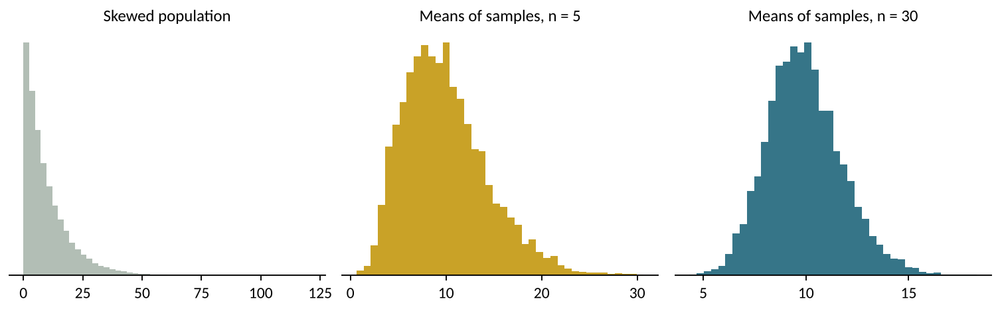</p>
<p><strong>Figure 9.</strong> <em>The central limit theorem: means of
samples from a skewed population become normal as n increases</em></p>
<p><strong>Properties of the normal distribution:</strong> bell-shaped
and symmetric; mean = median = mode; asymptotic (tails approach but
never touch the x-axis); total area = 1; defined by μ and σ; fixed
proportions within SD units (68-95-99.7 rule); inflection points at μ ±
σ.</p>
<h2 id="distribution-of-sample-means-and-standard-error">5.4
Distribution of sample means and standard error</h2>
<p>The mean of the sampling distribution equals the population mean (x̄
is an <strong>unbiased estimator</strong> of μ). The <strong>standard
error of the mean (SEM)</strong> measures the uncertainty of the sample
mean.</p>
<div class="box box-note">SE(x̄) = σ / √n (estimated: s / √n)</div>
<div class="box box-example"><div class="box-label">Worked Example</div>
<p>If the SD of Grade 8 mathematics scores is 12 and a sample of 144
students is drawn, SE = 12 / √144 = 12 / 12 = <strong>1</strong>. About
95% of sample means will lie within ±1.96 marks of the population mean.
Quadrupling the sample size halves the standard error.</p></div>
<div class="box box-key"><div class="box-label">Key Point</div>
<p>The <strong>standard error</strong> (variability of a statistic
across samples) is different from the <strong>standard
deviation</strong> (variability of individual scores) and from the
<strong>standard error of measurement</strong> (variability of an
individual's observed scores around the true score in test
theory).</p></div>
<h2 id="normal-and-standard-normal-distribution">5.5 Normal and standard
normal distribution</h2>
<p>The <strong>standard normal distribution</strong> has μ = 0 and σ =
1. Any normal variable is converted to z = (X − μ)/σ, and probabilities
are read from the z-table.</p>
<div class="box box-example"><div class="box-label">Worked Example</div>
<p>SSC mathematics scores in a district are approximately normal with μ
= 60 and σ = 10. (a) What proportion scored above 75? z = (75 − 60)/10 =
1.5; area beyond z = 1.5 is <strong>0.0668</strong>, so about 6.7%. (b)
What proportion scored between 50 and 70? z = −1 to +1, area =
<strong>0.6827</strong> (about 68%). (c) What score marks the top 10%? z
= 1.28, so X = 60 + 1.28 × 10 = <strong>72.8</strong>.</p></div>
<p><strong>Applications:</strong> converting scores to percentiles;
setting cut-off scores; grading on the curve (with caution); checking
normality assumptions; computing probabilities in inference.</p>
<div class="box box-exam"><div class="box-label">Exam Focus</div>
<p>Expect: "What is a sampling distribution? Explain its role in
inference." "State and explain the central limit theorem." "Distinguish
standard deviation and standard error." "Solve problems using the normal
curve table."</p></div>
<h1 id="unit-6-probability">Unit 6: Probability</h1><div aria-label="Tools for Unit 6: Probability" class="unit-tools" role="group"><button aria-label="Listen to Unit 6: Probability" class="tts-btn" data-target="unit-6-probability" data-tts="unit" type="button"><span aria-hidden="true">▶</span> Listen to this chapter</button><button aria-label="Listen to the summary of Unit 6: Probability" class="tts-btn" data-target="sum-unit-6-probability" data-tts="summary" type="button"><span aria-hidden="true">▶</span> Listen to summary</button><button class="done-btn" data-unit="unit-6-probability" type="button">Mark as studied</button></div><details class="unit-summary" id="sum-unit-6-probability"><summary>Chapter summary</summary><div class="sum-body"><p>Research uses samples; samples vary by chance. Probability quantifies uncertainty, enabling researchers to decide whether an observed difference is likely to be real or due to chance (significance), to estimate parameters with stated confidence, and to model outcomes (e.g., guessing on MCQs).</p><p><strong>This chapter covers:</strong> Rationale for studying probability in research; Concept, meaning and types of probability; Laws of probability; Important probability distributions.</p><p><strong>Key terms:</strong></p><ul><li>Probability: A numerical measure of the likelihood that an event will occur, ranging from 0 (impossible) to 1 (certain).</li></ul><p><strong>Key points to remember:</strong></p><ul><li>The syllabus terms a priori and a posteriori probability refer to probability determined before experience (by reasoning) versus after experience (from observed frequencies).</li></ul></div></details><details class="curriculum" open=""><summary><span class="cur-label">What the curriculum says</span><span class="cur-unit">Unit 6: Probability · 5 contact hours</span></summary><div class="cur-h">Learning outcomes</div><p class="cur-lead">At the end of this unit learners will be able to</p><ol type="a"><li>explain the rationale for studying probability in research</li><li>use probability theories in research</li></ol><div class="cur-h">Content</div><ul><li>Rationale for studying probability of events/variable in research</li><li>Concept, meaning and types of probability</li><li>Probability theory: a priori and a posterior probability</li><li>Law of probability, application of the theory to solve practical problems</li><li>Important probability distributions and their application in the social sciences, normal distribution, binomial distribution, point estimates</li></ul></details>
<h2 id="rationale-for-studying-probability-in-research">6.1 Rationale
for studying probability in research</h2>
<p>Research uses samples; samples vary by chance.
<strong>Probability</strong> quantifies uncertainty, enabling
researchers to decide whether an observed difference is likely to be
real or due to chance (significance), to estimate parameters with stated
confidence, and to model outcomes (e.g., guessing on MCQs).</p>
<h2 id="concept-meaning-and-types-of-probability">6.2 Concept, meaning
and types of probability</h2>
<div class="box box-def"><div class="box-label">Definition</div>
<p><strong>Probability:</strong> A numerical measure of the likelihood
that an event will occur, ranging from 0 (impossible) to 1 (certain).
P(A) = number of favourable outcomes ÷ total number of equally likely
outcomes.</p></div>
<div class="table-wrap"><table>

<thead>
<tr class="header">
<th><strong>Approach</strong></th>
<th><strong>Definition</strong></th>
<th><strong>Example</strong></th>
</tr>
</thead>
<tbody>
<tr class="odd">
<td><strong>Classical (a priori)</strong></td>
<td>Based on logical analysis of equally likely outcomes, before
observation</td>
<td>P(head) = 1/2; P(guessing correctly on a 4-option MCQ) = 1/4</td>
</tr>
<tr class="even">
<td><strong>Empirical / relative frequency (a posteriori)</strong></td>
<td>Based on observed frequencies over many trials</td>
<td>If 180 of 1,000 students dropped out, P(dropout) ≈ 0.18</td>
</tr>
<tr class="odd">
<td><strong>Subjective</strong></td>
<td>Based on personal judgement</td>
<td>A principal estimates a 70% chance of passing inspection</td>
</tr>
<tr class="even">
<td><strong>Axiomatic</strong></td>
<td>Based on Kolmogorov's axioms</td>
<td>Mathematical foundation for all approaches</td>
</tr>
</tbody>
</table></div>
<p><strong>Table 14.</strong> <em>Approaches to probability</em></p>
<div class="box box-key"><div class="box-label">Key Point</div>
<p>The syllabus terms <strong>a priori</strong> and <strong>a
posteriori</strong> probability refer to probability determined before
experience (by reasoning) versus after experience (from observed
frequencies). In Bayesian statistics, a <strong>prior</strong>
probability is updated with evidence to give a
<strong>posterior</strong> probability.</p></div>
<h2 id="laws-of-probability">6.3 Laws of probability</h2>
<div class="box box-note"><p>Addition (mutually exclusive events): P(A or B) = P(A) + P(B)</p>
<p>General addition: P(A or B) = P(A) + P(B) − P(A and B)</p>
<p>Multiplication (independent events): P(A and B) = P(A) × P(B)</p>
<p>General multiplication: P(A and B) = P(A) × P(B | A)</p>
<p>Complement: P(not A) = 1 − P(A)</p>
<p>Bayes' theorem: P(A | B) = P(B | A) P(A) / P(B)</p></div>
<div class="box box-example"><div class="box-label">Worked Example</div>
<p>(1) A student guesses on two 4-option MCQs. P(both correct) = 1/4 ×
1/4 = <strong>1/16 = 0.0625</strong>. P(at least one correct) = 1 −
(3/4)² = 1 − 0.5625 = <strong>0.4375</strong>. (2) In a class, 40% are
girls and 25% wear glasses, 10% are girls with glasses. P(girl or
glasses) = 0.40 + 0.25 − 0.10 = <strong>0.55</strong>.</p></div>
<div class="box box-example"><div class="box-label">Worked Example</div>
<p>Bayes' theorem in screening: 5% of children have a reading
disability. A screening test detects 90% of affected children
(sensitivity) but also flags 10% of unaffected children (false
positives). If a child is flagged, P(disability | flagged) = (0.90 ×
0.05) / (0.90 × 0.05 + 0.10 × 0.95) = 0.045 / 0.140 =
<strong>0.32</strong>. Only about one in three flagged children actually
has the disability: a key lesson for teachers about screening.</p></div>
<h2 id="important-probability-distributions">6.4 Important probability
distributions</h2>
<h3 id="binomial-distribution">Binomial distribution</h3>
<p>Applies when there are n independent trials, each with two outcomes
(success/failure) and a constant probability p of success.</p>
<div class="box box-note"><p>P(X = k) = ⁿCₖ pᵏ (1 − p)ⁿ⁻ᵏ</p>
<p>Mean = np; SD = √[np(1 − p)]</p></div>
<div class="box box-example"><div class="box-label">Worked Example</div>
<p>A student guesses all 5 four-option MCQs. P(exactly 3 correct) = ⁵C₃
(0.25)³ (0.75)² = 10 × 0.015625 × 0.5625 = <strong>0.088</strong>.
Expected number correct by guessing = 5 × 0.25 = 1.25. This is the basis
of <strong>correction for guessing</strong> formulas.</p></div>
<h3 id="normal-distribution">Normal distribution</h3>
<p>Continuous, symmetric distribution used for many educational measures
and as the approximation for many sampling distributions (see Unit 5).
The binomial approaches the normal when np and n(1 − p) are both ≥
5.</p>
<h3 id="other-distributions">Other distributions</h3>
<p><strong>t-distribution</strong> (Gosset, "Student", 1908) for
small-sample means; <strong>chi-square</strong> for categorical data and
variances; <strong>F-distribution</strong> (Fisher) for ratios of
variances (ANOVA); <strong>Poisson</strong> for counts of rare
events.</p>
<h3 id="point-estimates">Point estimates</h3>
<p>A <strong>point estimate</strong> is a single value used to estimate
a parameter: x̄ estimates μ, s estimates σ, p̂ estimates the population
proportion. Good estimators are <strong>unbiased</strong>,
<strong>consistent</strong>, <strong>efficient</strong> and
<strong>sufficient</strong>. An <strong>interval estimate</strong>
(confidence interval) supplements a point estimate with a range.</p>
<div class="box box-note">95% confidence interval for μ: x̄ ± t(0.025, n − 1) × s / √n (for
large n, use 1.96)</div>
<div class="box box-example"><div class="box-label">Worked Example</div>
<p>A sample of 100 teachers has mean job-satisfaction score 3.6 (SD
0.8). SE = 0.08. 95% CI = 3.6 ± 1.96 × 0.08 = <strong>3.44 to
3.76</strong>.</p></div>
<div class="box box-exam"><div class="box-label">Exam Focus</div>
<p>Expect: "Explain a priori and a posteriori probability." "State the
laws of probability with examples." "Solve a binomial probability
problem related to guessing in MCQs." "What are point and interval
estimates?"</p></div>
<h1 id="unit-7-testing-hypotheses-and-making-decisions">Unit 7: Testing
Hypotheses and Making Decisions</h1><div aria-label="Tools for Unit 7: Testing Hypotheses and Making Decisions" class="unit-tools" role="group"><button aria-label="Listen to Unit 7: Testing Hypotheses and Making Decisions" class="tts-btn" data-target="unit-7-testing-hypotheses-and-making-decisions" data-tts="unit" type="button"><span aria-hidden="true">▶</span> Listen to this chapter</button><button aria-label="Listen to the summary of Unit 7: Testing Hypotheses and Making Decisions" class="tts-btn" data-target="sum-unit-7-testing-hypotheses-and-making-decisions" data-tts="summary" type="button"><span aria-hidden="true">▶</span> Listen to summary</button><button class="done-btn" data-unit="unit-7-testing-hypotheses-and-making-decisions" type="button">Mark as studied</button></div><details class="unit-summary" id="sum-unit-7-testing-hypotheses-and-making-decisions"><summary>Chapter summary</summary><div class="sum-body"><p>A statistical hypothesis is a statement about a population parameter. The null hypothesis (H₀) states no effect or no difference (μ₁ = μ₂); the alternative hypothesis (H₁) states that an effect exists (μ₁ ≠ μ₂, two-tailed; or μ₁ &gt; μ₂, one-tailed).</p><p><strong>This chapter covers:</strong> Making decisions in statistics; Procedure for hypothesis testing; Parametric approach; Non-parametric approach.</p><p><strong>Key terms:</strong></p><ul><li>Chi-square test: A non-parametric test that compares observed frequencies with expected frequencies under H₀. χ² = Σ (O − E)² / E.</li></ul></div></details><details class="curriculum" open=""><summary><span class="cur-label">What the curriculum says</span><span class="cur-unit">Unit 7: Testing hypothesis and making decisions · 5 contact hours</span></summary><div class="cur-h">Learning outcomes</div><p class="cur-lead">At the end of this unit learners will be able to</p><ol type="a"><li>use the parametric statistics in taking decisions in research</li><li>use the non-parametric statistics in taking decisions in research</li></ol><div class="cur-h">Content</div><ul><li>Making decisions in statistics; Accuracy and probable errors in statistical decisions</li><li>Procedures for making statistical decisions: Hypothesis testing- concept, use and steps</li><li>Parametric approach: meaning and use<ul><li>Different types of parametric tests: t, Z, F statistics, definition, use and interpretation</li><li>Analysis of variance and covariance-meaning application and interpretation; one way, twoway and multiple factor ANOVA and ANOCOVA</li></ul></li><li>Non-Parametric approach<ul><li>Meaning and use; Types of non-parametric statistics</li><li>Two and multiple sample analysis:  Wilcoxon Rank-Sum Test: Concept and use  Wilcoxon Matched-Pairs Signed-Ranks T Test: Concept and use</li></ul></li></ul><div class="cur-sub">Kruskal-Wallis Test: Concept and use</div><ul><li>Test of independence: The Chi-square ( ) test- concept, use and limitation o Chi-square as Goodness-of-Fit test: Computation and decision-making process, Contingency tables and Yates correction for continuity o Chi Square Test of Independence: Computation and decision making process</li></ul></details>
<h2 id="making-decisions-in-statistics">7.1 Making decisions in
statistics</h2>
<p>A <strong>statistical hypothesis</strong> is a statement about a
population parameter. The <strong>null hypothesis (H₀)</strong> states
no effect or no difference (μ₁ = μ₂); the <strong>alternative hypothesis
(H₁)</strong> states that an effect exists (μ₁ ≠ μ₂, two-tailed; or μ₁
&gt; μ₂, one-tailed). Because decisions are based on samples, they carry
risks of error.</p>
<div class="table-wrap"><table>

<thead>
<tr class="header">
<th><strong>Decision</strong></th>
<th><strong>H₀ actually true</strong></th>
<th><strong>H₀ actually false</strong></th>
</tr>
</thead>
<tbody>
<tr class="odd">
<td><strong>Reject H₀</strong></td>
<td><strong>Type I error</strong> (probability α, "false positive")</td>
<td>Correct (power = 1 − β)</td>
</tr>
<tr class="even">
<td><strong>Retain H₀</strong></td>
<td>Correct (1 − α)</td>
<td><strong>Type II error</strong> (probability β, "false
negative")</td>
</tr>
</tbody>
</table></div>
<p><strong>Table 15.</strong> <em>Accuracy and errors in statistical
decisions</em></p>
<p></p>
<p><strong>Figure 10.</strong> <em>Type I and Type II errors and the
critical region</em></p>
<p>Factors increasing <strong>power</strong>: larger sample size, larger
effect size, higher α, one-tailed test (when justified), reduced
variability (reliable measures, homogeneous samples), and matched or
repeated-measures designs.</p>
<h2 id="procedure-for-hypothesis-testing">7.2 Procedure for hypothesis
testing</h2>
<p>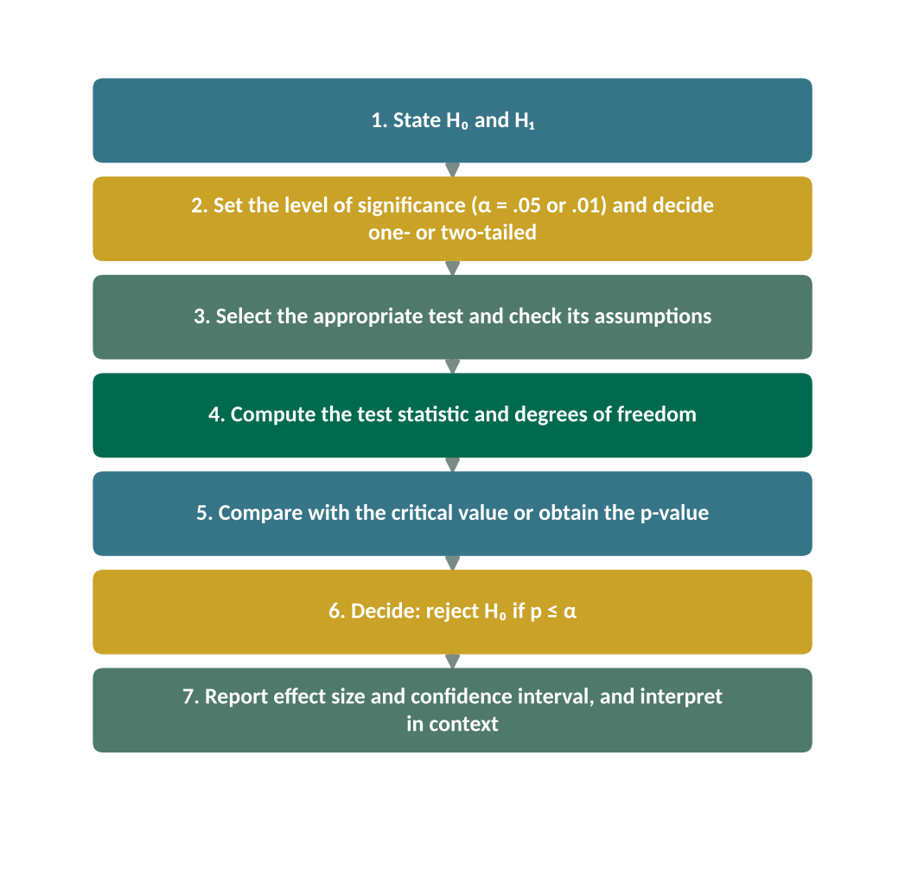</p>
<p><strong>Figure 11.</strong> <em>Steps in hypothesis testing</em></p>
<h2 id="parametric-approach">7.3 Parametric approach</h2>
<p><strong>Parametric tests</strong> make assumptions about population
parameters and distributions: interval/ratio DV, normality (or large n),
homogeneity of variances, independence. They are more powerful when
assumptions hold.</p>
<h3 id="t-z-and-f-statistics">t, Z and F statistics</h3>
<div class="table-wrap"><table>

<thead>
<tr class="header">
<th><strong>Test</strong></th>
<th><strong>Use</strong></th>
<th><strong>Formula</strong></th>
<th><strong>df</strong></th>
</tr>
</thead>
<tbody>
<tr class="odd">
<td><strong>Z-test for a mean</strong></td>
<td>Large sample or known σ</td>
<td>z = (x̄ − μ) / (σ/√n)</td>
<td>—</td>
</tr>
<tr class="even">
<td><strong>One-sample t</strong></td>
<td>Compare x̄ with a hypothesised value</td>
<td>t = (x̄ − μ) / (s/√n)</td>
<td>n − 1</td>
</tr>
<tr class="odd">
<td><strong>Independent t</strong></td>
<td>Two independent means</td>
<td>t = (x̄₁ − x̄₂) / s_diff, s_diff from pooled variance</td>
<td>n₁ + n₂ − 2</td>
</tr>
<tr class="even">
<td><strong>Paired t</strong></td>
<td>Two related means</td>
<td>t = d̄ / (s_d / √n)</td>
<td>n − 1</td>
</tr>
<tr class="odd">
<td><strong>F-test</strong></td>
<td>Ratio of two variances; ANOVA</td>
<td>F = s₁² / s₂² or MS_between / MS_within</td>
<td>(df₁, df₂)</td>
</tr>
</tbody>
</table></div>
<p><strong>Table 16.</strong> <em>t, Z and F tests</em></p>
<div class="box box-example"><div class="box-label">Worked Example</div>
<p>Paired t-test: Eight students' reading scores before and after a
phonics programme:</p></div>
<div class="table-wrap"><table style="width:100%;">

<thead>
<tr class="header">
<th><strong>Student</strong></th>
<th><strong>1</strong></th>
<th><strong>2</strong></th>
<th><strong>3</strong></th>
<th><strong>4</strong></th>
<th><strong>5</strong></th>
<th><strong>6</strong></th>
<th><strong>7</strong></th>
<th><strong>8</strong></th>
</tr>
</thead>
<tbody>
<tr class="odd">
<td><strong>Pre</strong></td>
<td>10</td>
<td>12</td>
<td>9</td>
<td>14</td>
<td>11</td>
<td>13</td>
<td>8</td>
<td>15</td>
</tr>
<tr class="even">
<td><strong>Post</strong></td>
<td>13</td>
<td>14</td>
<td>9</td>
<td>18</td>
<td>12</td>
<td>17</td>
<td>11</td>
<td>14</td>
</tr>
<tr class="odd">
<td><strong>d = Post − Pre</strong></td>
<td>3</td>
<td>2</td>
<td>0</td>
<td>4</td>
<td>1</td>
<td>4</td>
<td>3</td>
<td>−1</td>
</tr>
</tbody>
</table></div>
<p><strong>Table 17.</strong> <em>Data for a paired t-test</em></p>
<p>d̄ = 16/8 = <strong>2.0</strong>; s_d = 1.85; SE = 1.85/√8 = 0.655; t
= 2.0/0.655 = <strong>3.06</strong>, df = 7. Critical t (α = .05,
two-tailed, df = 7) = 2.365. Since 3.06 &gt; 2.365, H₀ is rejected:
reading scores improved significantly. Effect size d = d̄/s_d = 2.0/1.85
= <strong>1.08</strong> (large).</p>
<h3 id="analysis-of-variance-anova">Analysis of variance (ANOVA)</h3>
<p>ANOVA (R. A. Fisher) tests differences among three or more means by
partitioning total variance into <strong>between-groups</strong> and
<strong>within-groups</strong> components. Using multiple t-tests
instead inflates the Type I error rate (with three tests at α = .05, the
familywise error ≈ 1 − 0.95³ = .14).</p>
<div class="box box-note"><p>SS_total = SS_between + SS_within</p>
<p>SS_between = Σ nⱼ(x̄ⱼ − x̄_G)² ; SS_within = ΣΣ(x − x̄ⱼ)²</p>
<p>MS = SS / df ; F = MS_between / MS_within</p>
<p>df_between = k − 1 ; df_within = N − k</p></div>
<div class="box box-example"><div class="box-label">Worked Example</div>
<p>One-way ANOVA: scores of students taught by three methods (n = 5
each): Method A: 6, 8, 7, 9, 10 (mean 8); Method B: 4, 5, 6, 5, 5 (mean
5); Method C: 7, 9, 8, 8, 8 (mean 8). Grand mean = 7.</p></div>
<div class="table-wrap"><table>

<thead>
<tr class="header">
<th><strong>Source</strong></th>
<th><strong>SS</strong></th>
<th><strong>df</strong></th>
<th><strong>MS</strong></th>
<th><strong>F</strong></th>
</tr>
</thead>
<tbody>
<tr class="odd">
<td><strong>Between groups</strong></td>
<td>30</td>
<td>2</td>
<td>15.00</td>
<td>12.86</td>
</tr>
<tr class="even">
<td><strong>Within groups</strong></td>
<td>14</td>
<td>12</td>
<td>1.17</td>
<td></td>
</tr>
<tr class="odd">
<td><strong>Total</strong></td>
<td>44</td>
<td>14</td>
<td></td>
<td></td>
</tr>
</tbody>
</table></div>
<p><strong>Table 18.</strong> <em>ANOVA summary table</em></p>
<p>Critical F(2, 12) at α = .05 = 3.89. Since 12.86 &gt; 3.89, the
method means differ significantly. Effect size η² = SS_between /
SS_total = 30/44 = <strong>0.68</strong>. <strong>Post hoc
tests</strong> (Tukey HSD, Scheffé, Bonferroni) then identify which
pairs differ (here, B differs from A and C).</p>
<h3 id="two-way-and-multi-factor-anova">Two-way and multi-factor
ANOVA</h3>
<p><strong>Two-way ANOVA</strong> examines two independent variables
(factors) simultaneously, e.g., teaching method (A, B) × location
(urban, rural). It tests two <strong>main effects</strong> and their
<strong>interaction</strong> (whether the effect of one factor depends
on the level of the other).</p>
<p>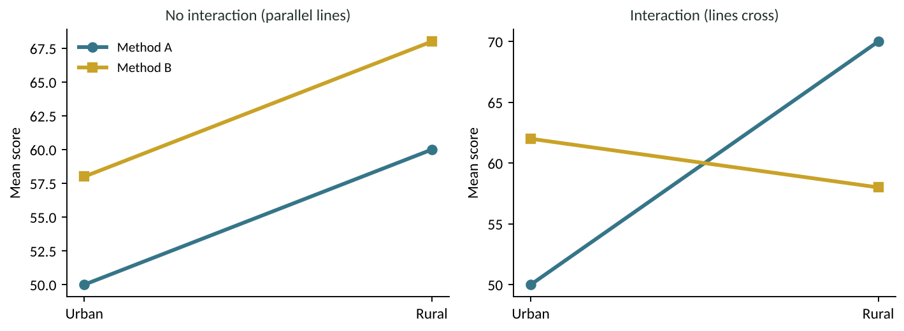</p>
<p><strong>Figure 12.</strong> <em>Interaction in two-way ANOVA:
parallel lines show no interaction; crossing lines show
interaction</em></p>
<p><strong>Multiple-factor (factorial) ANOVA</strong> extends this to
three or more factors (e.g., method × gender × location).
Repeated-measures ANOVA handles the same participants measured several
times; MANOVA handles several dependent variables.</p>
<h3 id="analysis-of-covariance-ancova">Analysis of covariance
(ANCOVA)</h3>
<p><strong>ANCOVA</strong> combines ANOVA with regression: it compares
group means on the DV after statistically adjusting for one or more
<strong>covariates</strong> (e.g., pretest scores, IQ). It increases
power and reduces bias from initial differences, especially in
quasi-experiments with intact classes. Additional assumptions: linear
relationship between covariate and DV, and <strong>homogeneity of
regression slopes</strong> across groups. One-way, two-way and
multi-factor ANCOVA follow the same logic as ANOVA.</p>
<h2 id="non-parametric-approach">7.4 Non-parametric approach</h2>
<p><strong>Non-parametric (distribution-free) tests</strong> make fewer
assumptions about population distributions. They are used with nominal
or ordinal data, small samples, skewed data or outliers. They are less
powerful than parametric tests when parametric assumptions hold.</p>
<div class="table-wrap"><table>

<thead>
<tr class="header">
<th><strong>Situation</strong></th>
<th><strong>Test</strong></th>
</tr>
</thead>
<tbody>
<tr class="odd">
<td><strong>One sample, nominal</strong></td>
<td>Chi-square goodness of fit; binomial test</td>
</tr>
<tr class="even">
<td><strong>Two independent samples, ordinal</strong></td>
<td>Wilcoxon rank-sum / Mann-Whitney U</td>
</tr>
<tr class="odd">
<td><strong>Two related samples, ordinal</strong></td>
<td>Wilcoxon matched-pairs signed-ranks (T); sign test</td>
</tr>
<tr class="even">
<td><strong>Three or more independent samples</strong></td>
<td>Kruskal-Wallis H</td>
</tr>
<tr class="odd">
<td><strong>Three or more related samples</strong></td>
<td>Friedman test</td>
</tr>
<tr class="even">
<td><strong>Association, nominal</strong></td>
<td>Chi-square test of independence; phi; Cramér's V</td>
</tr>
<tr class="odd">
<td><strong>Association, ordinal</strong></td>
<td>Spearman's rho; Kendall's tau</td>
</tr>
</tbody>
</table></div>
<p><strong>Table 19.</strong> <em>Types of non-parametric tests</em></p>
<h3 id="wilcoxon-rank-sum-test-mann-whitney-u">Wilcoxon rank-sum test
(Mann-Whitney U)</h3>
<p>Compares two independent groups by ranking all scores together and
comparing rank sums.</p>
<div class="box box-note"><p>U₁ = R₁ − n₁(n₁ + 1)/2 ; U₂ = R₂ − n₂(n₂ + 1)/2</p>
<p>U = the smaller of U₁ and U₂ ; check: U₁ + U₂ = n₁n₂</p></div>
<div class="box box-example"><div class="box-label">Worked Example</div>
<p>Creativity scores: Group A (art club) 12, 15, 18, 20, 22; Group B (no
club) 8, 10, 11, 14, 16. Ranking all ten: B's scores 8, 10, 11 get ranks
1, 2, 3; A's 12 gets 4; B's 14 gets 5; A's 15 gets 6; B's 16 gets 7; A's
18, 20, 22 get 8, 9, 10. R_A = 37, R_B = 18. U_A = 37 − 15 = 22; U_B =
18 − 15 = 3; <strong>U = 3</strong>. Critical U (n₁ = n₂ = 5, α = .05
two-tailed) = 2. Since 3 &gt; 2, H₀ is retained (p ≈ .056): the
difference is not significant with such small groups.</p></div>
<h3 id="wilcoxon-matched-pairs-signed-ranks-test-t">Wilcoxon
matched-pairs signed-ranks test (T)</h3>
<p>For two related samples: compute differences, drop zero differences,
rank the absolute differences, attach signs, and sum positive and
negative ranks; T = the smaller sum.</p>
<div class="box box-example"><div class="box-label">Worked Example</div>
<p>Using the pre-post reading data above: differences 3, 2, 0, 4, 1, 4,
3, −1. Drop the zero (n = 7). Absolute values ranked: 1, 1 → ranks 1.5,
1.5; 2 → 3; 3, 3 → 4.5, 4.5; 4, 4 → 6.5, 6.5. The only negative
difference (−1) has rank 1.5. T⁻ = 1.5; T⁺ = 26.5; <strong>T =
1.5</strong>. Critical T (n = 7, α = .05 two-tailed) = 2. Since 1.5 ≤ 2,
H₀ is rejected (p ≈ .047), consistent with the paired t-test.</p></div>
<h3 id="kruskal-wallis-test">Kruskal-Wallis test</h3>
<p>Non-parametric equivalent of one-way ANOVA for three or more
independent groups.</p>
<div class="box box-note">H = [12 / N(N + 1)] Σ (Rⱼ² / nⱼ) − 3(N + 1), df = k − 1 (compare
with chi-square)</div>
<p>For the three-method data above, H = 9.29 (corrected for ties) &gt;
χ²(2) critical 5.99, so the groups differ significantly.</p>
<h3 id="chi-square-χ²-test">Chi-square (χ²) test</h3>
<div class="box box-def"><div class="box-label">Definition</div>
<p><strong>Chi-square test:</strong> A non-parametric test that compares
<strong>observed</strong> frequencies with <strong>expected</strong>
frequencies under H₀. χ² = Σ (O − E)² / E. It is used as a
goodness-of-fit test (one variable) and a test of independence (two
variables in a contingency table).</p></div>
<p><strong>Limitations:</strong> requires frequencies (not percentages
or means); observations must be independent; expected frequencies should
generally be at least 5 in each cell (otherwise combine categories or
use Fisher's exact test); sensitive to sample size; shows association,
not its strength or direction (use phi or Cramér's V).</p>
<p>#### Chi-square as a goodness-of-fit test</p>
<div class="box box-example"><div class="box-label">Worked Example</div>
<p>60 HSC students choose among three streams. H₀: choices are equally
distributed. Observed: Science 28, Humanities 18, Business 14. Expected
= 20 each. χ² = (28 − 20)²/20 + (18 − 20)²/20 + (14 − 20)²/20 = 3.2 +
0.2 + 1.8 = <strong>5.20</strong>, df = 2. Critical value = 5.99. Since
5.20 &lt; 5.99, H₀ is retained (p ≈ .074).</p></div>
<p>#### Contingency tables and Yates's correction for continuity</p>
<p>For 2 × 2 tables (df = 1), especially with small expected
frequencies, <strong>Yates's correction</strong> subtracts 0.5 from each
|O − E| to adjust for using a continuous distribution for discrete
counts.</p>
<div class="box box-note"><p>Yates: χ² = Σ (|O − E| − 0.5)² / E</p>
<p>Shortcut for a 2 × 2 table with cells a, b, c, d: χ² = N(|ad − bc| −
N/2)² / [(a + b)(c + d)(a + c)(b + d)]</p></div>
<div class="box box-example"><div class="box-label">Worked Example</div>
<p>40 students: of 20 who attended remedial classes, 12 passed and 8
failed; of 20 who did not, 5 passed and 15 failed. Without correction:
χ² = 40(12 × 15 − 8 × 5)² / (20 × 20 × 17 × 23) = 40 × 19,600 / 156,400
= <strong>5.01</strong>. With Yates: χ² = 40(|180 − 40| − 20)² / 156,400
= 40 × 14,400 / 156,400 = <strong>3.68</strong>. Critical value (df = 1,
α = .05) = 3.84. The uncorrected test is significant but the corrected
one is not: a reminder that small samples call for caution (Fisher's
exact test is a better choice here).</p></div>
<p>#### Chi-square test of independence</p>
<div class="box box-example"><div class="box-label">Worked Example</div>
<p>100 students (50 male, 50 female) are asked if they prefer online
classes. Males: 30 yes, 20 no; females: 20 yes, 30 no. Expected for each
cell = (50 × 50)/100 = 25. χ² = 4 × (5²/25) = <strong>4.00</strong>, df
= 1 &gt; 3.84, so preference is associated with gender (uncorrected).
Cramér's V = √(χ²/N) = √0.04 = <strong>0.20</strong> (weak to moderate
association).</p></div>
<div class="table-wrap"><table>

<thead>
<tr class="header">
<th><strong>Research question</strong></th>
<th><strong>DV scale</strong></th>
<th><strong>Groups</strong></th>
<th><strong>Test</strong></th>
</tr>
</thead>
<tbody>
<tr class="odd">
<td><strong>Difference, 2 independent groups</strong></td>
<td>Interval, normal</td>
<td>2</td>
<td>Independent t</td>
</tr>
<tr class="even">
<td><strong>Difference, 2 independent groups</strong></td>
<td>Ordinal / non-normal</td>
<td>2</td>
<td>Mann-Whitney U</td>
</tr>
<tr class="odd">
<td><strong>Difference, 2 related</strong></td>
<td>Interval, normal</td>
<td>2</td>
<td>Paired t</td>
</tr>
<tr class="even">
<td><strong>Difference, 2 related</strong></td>
<td>Ordinal / non-normal</td>
<td>2</td>
<td>Wilcoxon signed-rank</td>
</tr>
<tr class="odd">
<td><strong>Difference, 3+ independent</strong></td>
<td>Interval, normal</td>
<td>3+</td>
<td>One-way ANOVA</td>
</tr>
<tr class="even">
<td><strong>Difference, 3+ independent</strong></td>
<td>Ordinal</td>
<td>3+</td>
<td>Kruskal-Wallis</td>
</tr>
<tr class="odd">
<td><strong>Difference controlling a covariate</strong></td>
<td>Interval</td>
<td>2+</td>
<td>ANCOVA</td>
</tr>
<tr class="even">
<td><strong>Association</strong></td>
<td>Nominal</td>
<td>—</td>
<td>Chi-square</td>
</tr>
<tr class="odd">
<td><strong>Relationship</strong></td>
<td>Interval / ordinal</td>
<td>—</td>
<td>Pearson r / Spearman ρ</td>
</tr>
<tr class="even">
<td><strong>Prediction</strong></td>
<td>Interval</td>
<td>—</td>
<td>Regression</td>
</tr>
</tbody>
</table></div>
<p><strong>Table 20.</strong> <em>Choosing a test: quick decision
guide</em></p>
<div class="box box-exam"><div class="box-label">Exam Focus</div>
<p>Expect: "Explain Type I and Type II errors and the factors affecting
power." "Describe the steps of hypothesis testing." "Distinguish
parametric and non-parametric tests." "Compute a one-way ANOVA and
interpret." "What is ANCOVA? When is it used?" "Explain the chi-square
test as goodness of fit and test of independence; what is Yates's
correction?" "Explain the Wilcoxon and Kruskal-Wallis tests."</p></div>
<h1 id="unit-8-prediction-multivariate-analysis">Unit 8: Prediction:
Multivariate Analysis</h1><div aria-label="Tools for Unit 8: Prediction: Multivariate Analysis" class="unit-tools" role="group"><button aria-label="Listen to Unit 8: Prediction: Multivariate Analysis" class="tts-btn" data-target="unit-8-prediction-multivariate-analysis" data-tts="unit" type="button"><span aria-hidden="true">▶</span> Listen to this chapter</button><button aria-label="Listen to the summary of Unit 8: Prediction: Multivariate Analysis" class="tts-btn" data-target="sum-unit-8-prediction-multivariate-analysis" data-tts="summary" type="button"><span aria-hidden="true">▶</span> Listen to summary</button><button class="done-btn" data-unit="unit-8-prediction-multivariate-analysis" type="button">Mark as studied</button></div><details class="unit-summary" id="sum-unit-8-prediction-multivariate-analysis"><summary>Chapter summary</summary><div class="sum-body"><p>Prediction helps in admission and selection (predicting university success from HSC results and admission test scores), early warning systems (predicting dropout from attendance and achievement), guidance and counselling, programme planning and theory testing. Single prediction uses one predictor; multiple prediction uses two or more.</p><p><strong>This chapter covers:</strong> Importance of prediction in educational research; Simple regression; Coefficient of determination and standard error of estimate; Multiple regression.</p></div></details><details class="curriculum" open=""><summary><span class="cur-label">What the curriculum says</span><span class="cur-unit">Unit 8: Prediction-Multivariate analysis · 5 contact hours</span></summary><div class="cur-h">Learning outcomes</div><p class="cur-lead">At the end of this unit learners will be able to</p><ol type="a"><li>describe the significance of prediction in research</li><li>use the techniques of prediction while doing research</li></ol><div class="cur-h">Content</div><ul><li>Importance of predication in educational research: Single and multiple prediction</li><li>Techniques for prediction:Regression analysis</li></ul><div class="cur-sub">Simple regression:</div><ul><li>Concept, Regression line, equation of regression line,</li><li>Line of best fit, Determining regression equation</li><li>Multiple regression: (i) Predicting dependent variable and (ii) Assessing the effect of</li></ul><div class="cur-sub">independent variables</div><ul><li>Coefficient of determination, Standard error of estimate</li></ul></details>
<h2 id="importance-of-prediction-in-educational-research">8.1 Importance
of prediction in educational research</h2>
<p>Prediction helps in admission and selection (predicting university
success from HSC results and admission test scores), early warning
systems (predicting dropout from attendance and achievement), guidance
and counselling, programme planning and theory testing. <strong>Single
prediction</strong> uses one predictor; <strong>multiple
prediction</strong> uses two or more.</p>
<h2 id="simple-regression">8.2 Simple regression</h2>
<p><strong>Concept:</strong> simple linear regression models the
relationship between one predictor (X) and one criterion (Y) with a
straight line.</p>
<div class="box box-note"><p>Regression equation: Ŷ = a + bX</p>
<p>b = Σxy / Σx² (deviation form) = r (s_Y / s_X)</p>
<p>a = Ȳ − b X̄</p></div>
<p>The <strong>regression line</strong> (line of best fit) is determined
by the <strong>least-squares criterion</strong>: it minimises the sum of
squared residuals Σ(Y − Ŷ)².</p>
<div class="box box-example"><div class="box-label">Worked Example</div>
<p>Using the six students' data from Unit 4 (Σxy = 425, Σx² = 437.5, X̄ =
57.5, Ȳ = 53): b = 425 / 437.5 = <strong>0.971</strong>; a = 53 − 0.971
× 57.5 = <strong>−2.86</strong>. Regression equation: Ŷ = −2.86 +
0.971X. A student with a class-test score of 62 is predicted to score
−2.86 + 60.20 = <strong>57.3</strong> in the final exam.</p></div>
<p></p>
<p><strong>Figure 13.</strong> <em>Regression line, predicted values and
residuals</em></p>
<h2 id="coefficient-of-determination-and-standard-error-of-estimate">8.3
Coefficient of determination and standard error of estimate</h2>
<div class="box box-note"><p>Coefficient of determination R² (= r² in simple regression) =
SS_regression / SS_total</p>
<p>Standard error of estimate SEE = √[Σ(Y − Ŷ)² / (N − 2)] = s_Y √(1 −
r²) × √[(N − 1)/(N − 2)]</p></div>
<div class="box box-example"><div class="box-label">Worked Example</div>
<p>For the example, r = 0.954, so r² = <strong>0.91</strong>: 91% of the
variance in final scores is explained by class-test scores. The residual
sum of squares is 41.14, so SEE = √(41.14 / 4) = <strong>3.21</strong>
marks: predictions are typically within about ±3.2 marks (about 68%
within ±1 SEE, assuming normal residuals).</p></div>
<h2 id="multiple-regression">8.4 Multiple regression</h2>
<p><strong>Multiple regression</strong> predicts Y from two or more
predictors.</p>
<div class="box box-note">Ŷ = b₀ + b₁X₁ + b₂X₂ + ... + bₖXₖ</div>
<p>Two uses:</p>
<blockquote class="mcq-options">
<p><strong>1.</strong> <strong>Predicting the dependent
variable:</strong> e.g., predicting first-year university GPA from HSC
GPA, admission test score and English proficiency.</p>
<p><strong>2.</strong> <strong>Assessing the effect of independent
variables:</strong> the partial regression coefficient bⱼ shows the
change in Y for a one-unit change in Xⱼ, <strong>holding other
predictors constant</strong>. Standardised coefficients (β) allow
comparison of predictors' relative importance.</p>
</blockquote>
<div class="box box-example"><div class="box-label">Worked Example</div>
<p>Illustrative output: Ŷ(SSC mathematics score) = 22.5 +
0.45(attendance %) + 3.2(hours of home study per day) + 4.8(mother's
education, years ÷ 4). R² = .38, F(3, 296) = 60.3, p &lt; .001.
Interpretation: together the three predictors explain 38% of the
variance in mathematics scores. Holding the others constant, each
additional percentage point of attendance is associated with 0.45 more
marks; each additional daily hour of home study with 3.2 more marks.
(Numbers are illustrative only.)</p></div>
<div class="table-wrap"><table>

<thead>
<tr class="header">
<th><strong>Concept</strong></th>
<th><strong>Meaning</strong></th>
</tr>
</thead>
<tbody>
<tr class="odd">
<td><strong>Multiple correlation (R)</strong></td>
<td>Correlation between observed Y and predicted Ŷ</td>
</tr>
<tr class="even">
<td><strong>R²</strong></td>
<td>Proportion of variance in Y explained by all predictors</td>
</tr>
<tr class="odd">
<td><strong>Adjusted R²</strong></td>
<td>R² corrected for number of predictors and sample size</td>
</tr>
<tr class="even">
<td><strong>F-test for the model</strong></td>
<td>Tests whether R² is significantly greater than zero</td>
</tr>
<tr class="odd">
<td><strong>t-tests for coefficients</strong></td>
<td>Test whether each predictor contributes significantly</td>
</tr>
<tr class="even">
<td><strong>Standardised β</strong></td>
<td>Coefficients in SD units; compare relative importance</td>
</tr>
<tr class="odd">
<td><strong>Multicollinearity</strong></td>
<td>High correlation among predictors; inflates SEs (check VIF &gt; 10
or tolerance &lt; .1)</td>
</tr>
<tr class="even">
<td><strong>Methods of entry</strong></td>
<td>Enter (simultaneous), hierarchical (blocks by theory), stepwise
(statistical, criticised)</td>
</tr>
<tr class="odd">
<td><strong>Assumptions</strong></td>
<td>Linearity, independence of errors (Durbin-Watson), homoscedasticity,
normality of residuals, no influential outliers (Cook's distance)</td>
</tr>
<tr class="even">
<td><strong>Sample size</strong></td>
<td>Rule of thumb N ≥ 50 + 8k for testing R² (Green, 1991), where k is
the number of predictors</td>
</tr>
</tbody>
</table></div>
<p><strong>Table 21.</strong> <em>Key concepts in multiple
regression</em></p>
<div class="box box-critical"><div class="box-label">Critical Perspective</div>
<p>Regression shows prediction and association, not causation, unless
the design supports causal inference. Stepwise selection capitalises on
chance and is discouraged; theory-driven hierarchical regression is
preferred. For students nested in schools, multilevel models avoid
underestimated standard errors.</p></div>
<div class="box box-tip"><div class="box-label">Study tip</div><p>Practise the full workflow with free software such as JASP or jamovi (menu-driven, APA-style output), and R if you want to go further: enter data, check assumptions with plots, run the analysis, and write an APA-style results paragraph. Make sure you can explain each number in the output table.</p></div>
<div class="box box-exam"><div class="box-label">Exam Focus</div>
<p>Expect: "Explain the importance of prediction in educational
research." "Fit a regression line to given data and predict Y for a
given X." "Explain the coefficient of determination and the standard
error of estimate." "Distinguish simple and multiple regression;
interpret a multiple regression output."</p></div>
<h1 id="reading-list">Reading List</h1><div aria-label="Tools for Reading List" class="unit-tools" role="group"><button aria-label="Listen to Reading List" class="tts-btn" data-target="reading-list" data-tts="unit" type="button"><span aria-hidden="true">▶</span> Listen to this chapter</button><button class="done-btn" data-unit="reading-list" type="button">Mark as studied</button></div><h2 id="reading-list-curriculum">Recommended in the curriculum</h2><p class="rl-note">Books, journals and reports listed in the official course curriculum, as given there.</p><ol class="reading"><li>Blommers, P., &amp; Forsyth, R.A. (1977). Elementary Statistical Methods in Psychology and Education (2nd Ed.). Boston: Houghton Mifflin Company.</li><li>Connolly, P. (2007). Quantitative data analysis in education: A critical introduction using SPSS. London: Routledge.</li><li>Field, A. (2017). Discovering statistics using IBM SPSS statistics. London: Sage Publications, Ltd.</li><li>Garrett, H. E. (1973). Statistics in Psychology and Education, New York:Longmans, Green &amp; Co.</li><li>Gravetter, F. J., &amp; Wallnau, L. B. (2013). Statistics for the behavioral sciences (9th ed.). Belmont, CA: Wadsworth.</li><li>Hussain, K. M. (1969). Tathya Goonit. Dhaka: Kendria Bangla Unnayan Board.</li><li>Herochel, T. Elementary statistics for Teachers, EURASIA Publishing House (Pvt.) Ltd. Ramnagar, New Delhi-1.</li><li>Hinkle, D. E., Wiersma, W., &amp; Jurs, S. G. (2003). Applied statistics for the behavioral sciences (5th ed.). New York: Longman.</li><li>Pagano, R. R. (2009). Understanding statistics for the behavioral sciences (9th ed.). Belmont, CA: Wadsworth.</li><li>Walker, H. M. (1964). Mathematics Essential for Elementary statistics: A Self-Teaching Manual. New York: Holt, Rinehart and Winston.</li><li>Walker, H. M., &amp; Lev. J. (1953). Statistical Inference. New York: Holt, Rinehart and Winston.</li><li>Walker, H. M., &amp; Lev. J. (1958). Elementary Statistical Methods. New York: Holt, Rinehart and Winston.</li><li>শাহজাহান তপন ও আব্দুর রশিদ (২০০৯), শিক্ষায় পরিমাপ ও মূল্যায়ন, ঢাকা: মেট্রো পাবলিকেশন্স।</li><li>Journals and Reports (example of use of statistical measurement):</li><li>Azizeh, B., Kobra, P., Faranak, J. T., Parvin, S., &amp; Bagher, S. (2019). Is Professional Self-concept Associated With Stress Among Nursing Students in Clinical Setting: A Descriptive Correlational Research. Crescent Journal of Medical and Biological Sciences, 6 (2), 191-195.</li><li>BRAC. (2020). A rapid assessment: Impact of COVID-19 on Education in Bangladesh. Advocacy for Social Change (ASC) &amp; BRAC Education Programme (BEP).</li><li>Malak, M. S., Sharma, U., &amp; Deppeler, J. M. (2018). Predictors of primary schoolteachers‘ behavioural intention to teach students demonstrating inappropriate behaviour in regular classrooms. Cambridge journal of education, 48(4), 495-514.</li><li>Mohiuddin, G. (2015). A Study on Educational Assessment of Secondary and Higher Secondary Teachers of Bangladesh. World Scientific News, 16, 95-115.</li><li>Muhammad, S., Hafsa,T., &amp; Iqra, L. (2018). Teachers‘ Perceptions about the Use of Classroom Assessment Techniques in Elementary and Secondary Schools. Bulletin of Education and Research, 40(1), 115-130.</li></ol><h2 id="reading-list-world">Widely read books worldwide on this subject</h2><p class="rl-note">Well-known international texts that go well with this course.</p><ol class="reading"><li>Field, A. (2018). Discovering Statistics Using IBM SPSS Statistics (5th ed.). Sage.</li><li>Howell, D. C. (2013). Statistical Methods for Psychology (8th ed.). Wadsworth.</li><li>Glass, G. V., &amp; Hopkins, K. D. (1996). Statistical Methods in Education and Psychology (3rd ed.). Allyn &amp; Bacon.</li><li>Tabachnick, B. G., &amp; Fidell, L. S. (2019). Using Multivariate Statistics (7th ed.). Pearson.</li><li>Cohen, J. (1988). Statistical Power Analysis for the Behavioral Sciences (2nd ed.). Lawrence Erlbaum.</li><li>Siegel, S., &amp; Castellan, N. J. (1988). Nonparametric Statistics for the Behavioral Sciences (2nd ed.). McGraw-Hill.</li></ol><h1 id="exam-preparation-bank">Exam Preparation Bank</h1><div aria-label="Tools for Exam Preparation Bank" class="unit-tools" role="group"><button aria-label="Listen to Exam Preparation Bank" class="tts-btn" data-target="exam-preparation-bank" data-tts="unit" type="button"><span aria-hidden="true">▶</span> Listen to this chapter</button><button class="done-btn" data-unit="exam-preparation-bank" type="button">Mark as studied</button></div>
<h2 id="a.-multiple-choice-questions">A. Multiple-choice questions</h2>
<p><strong>1.</strong> A numerical characteristic of a population is
called a:</p>
<blockquote class="mcq-options">
<p><strong>(a)</strong> Statistic <strong>(b)</strong> Parameter
<strong>(c)</strong> Variable <strong>(d)</strong> Datum</p>
<details class="answer"><summary>Show answer</summary><p>Answer: (b)</p></details>
</blockquote>
<p><strong>2.</strong> The scale of measurement with a true zero is:</p>
<blockquote class="mcq-options">
<p><strong>(a)</strong> Nominal <strong>(b)</strong> Ordinal
<strong>(c)</strong> Interval <strong>(d)</strong> Ratio</p>
<details class="answer"><summary>Show answer</summary><p>Answer: (d)</p></details>
</blockquote>
<p><strong>3.</strong> Merit position in a class is measured on
a(n):</p>
<blockquote class="mcq-options">
<p><strong>(a)</strong> Nominal scale <strong>(b)</strong> Ordinal scale
<strong>(c)</strong> Interval scale <strong>(d)</strong> Ratio scale</p>
<details class="answer"><summary>Show answer</summary><p>Answer: (b)</p></details>
</blockquote>
<p><strong>4.</strong> The graph used to find median and percentiles
graphically is the:</p>
<blockquote class="mcq-options">
<p><strong>(a)</strong> Histogram <strong>(b)</strong> Ogive
<strong>(c)</strong> Pie chart <strong>(d)</strong> Bar chart</p>
<details class="answer"><summary>Show answer</summary><p>Answer: (b)</p></details>
</blockquote>
<p><strong>5.</strong> In a histogram, bars are drawn over:</p>
<blockquote class="mcq-options">
<p><strong>(a)</strong> Midpoints only <strong>(b)</strong> Exact class
limits <strong>(c)</strong> Cumulative frequencies <strong>(d)</strong>
Percentages only</p>
<details class="answer"><summary>Show answer</summary><p>Answer: (b)</p></details>
</blockquote>
<p><strong>6.</strong> The measure of central tendency most affected by
extreme scores is the:</p>
<blockquote class="mcq-options">
<p><strong>(a)</strong> Mean <strong>(b)</strong> Median
<strong>(c)</strong> Mode <strong>(d)</strong> Quartile</p>
<details class="answer"><summary>Show answer</summary><p>Answer: (a)</p></details>
</blockquote>
<p><strong>7.</strong> For nominal data, the appropriate measure of
central tendency is the:</p>
<blockquote class="mcq-options">
<p><strong>(a)</strong> Mean <strong>(b)</strong> Median
<strong>(c)</strong> Mode <strong>(d)</strong> Range</p>
<details class="answer"><summary>Show answer</summary><p>Answer: (c)</p></details>
</blockquote>
<p><strong>8.</strong> The semi-interquartile range is:</p>
<blockquote class="mcq-options">
<p><strong>(a)</strong> Q₃ − Q₁ <strong>(b)</strong> (Q₃ − Q₁)/2
<strong>(c)</strong> (Q₃ + Q₁)/2 <strong>(d)</strong> Q₂ − Q₁</p>
<details class="answer"><summary>Show answer</summary><p>Answer: (b)</p></details>
</blockquote>
<p><strong>9.</strong> If z = −1.5, the corresponding T-score is:</p>
<blockquote class="mcq-options">
<p><strong>(a)</strong> 35 <strong>(b)</strong> 45 <strong>(c)</strong>
65 <strong>(d)</strong> 15</p>
<details class="answer"><summary>Show answer</summary><p>Answer: (a)</p></details>
</blockquote>
<p><strong>10.</strong> In a normal distribution, about what percentage
of cases lie within ±2σ?</p>
<blockquote class="mcq-options">
<p><strong>(a)</strong> 68.26 <strong>(b)</strong> 95.44
<strong>(c)</strong> 99.74 <strong>(d)</strong> 50</p>
<details class="answer"><summary>Show answer</summary><p>Answer: (b)</p></details>
</blockquote>
<p><strong>11.</strong> In a negatively skewed distribution:</p>
<blockquote class="mcq-options">
<p><strong>(a)</strong> Mean &gt; Median &gt; Mode <strong>(b)</strong>
Mean &lt; Median &lt; Mode <strong>(c)</strong> Mean = Median = Mode
<strong>(d)</strong> Mode &lt; Mean</p>
<details class="answer"><summary>Show answer</summary><p>Answer: (b)</p></details>
</blockquote>
<p><strong>12.</strong> A correlation of −0.85 indicates:</p>
<blockquote class="mcq-options">
<p><strong>(a)</strong> Weak negative relationship <strong>(b)</strong>
Strong negative relationship <strong>(c)</strong> No relationship
<strong>(d)</strong> Strong positive relationship</p>
<details class="answer"><summary>Show answer</summary><p>Answer: (b)</p></details>
</blockquote>
<p><strong>13.</strong> Spearman's rank correlation formula is:</p>
<blockquote class="mcq-options">
<p><strong>(a)</strong> 1 − 6Σd²/N(N² − 1) <strong>(b)</strong>
Σxy/√(Σx²Σy²) <strong>(c)</strong> (Q₃ − Q₁)/2 <strong>(d)</strong> NΣXY
− ΣXΣY</p>
<details class="answer"><summary>Show answer</summary><p>Answer: (a)</p></details>
</blockquote>
<p><strong>14.</strong> The correlation between a continuous variable
and a true dichotomy is:</p>
<blockquote class="mcq-options">
<p><strong>(a)</strong> Phi <strong>(b)</strong> Point-biserial
<strong>(c)</strong> Biserial <strong>(d)</strong> Tetrachoric</p>
<details class="answer"><summary>Show answer</summary><p>Answer: (b)</p></details>
</blockquote>
<p><strong>15.</strong> Restriction of range usually causes a
correlation to be:</p>
<blockquote class="mcq-options">
<p><strong>(a)</strong> Overestimated <strong>(b)</strong>
Underestimated <strong>(c)</strong> Unchanged <strong>(d)</strong>
Negative</p>
<details class="answer"><summary>Show answer</summary><p>Answer: (b)</p></details>
</blockquote>
<p><strong>16.</strong> The standard error of the mean is:</p>
<blockquote class="mcq-options">
<p><strong>(a)</strong> σ√n <strong>(b)</strong> σ/√n
<strong>(c)</strong> σ/n <strong>(d)</strong> √σ/n</p>
<details class="answer"><summary>Show answer</summary><p>Answer: (b)</p></details>
</blockquote>
<p><strong>17.</strong> The central limit theorem states that the
sampling distribution of the mean approaches normality as:</p>
<blockquote class="mcq-options">
<p><strong>(a)</strong> σ increases <strong>(b)</strong> n increases
<strong>(c)</strong> μ increases <strong>(d)</strong> α decreases</p>
<details class="answer"><summary>Show answer</summary><p>Answer: (b)</p></details>
</blockquote>
<p><strong>18.</strong> Quadrupling the sample size makes the standard
error:</p>
<blockquote class="mcq-options">
<p><strong>(a)</strong> Double <strong>(b)</strong> Half
<strong>(c)</strong> One-quarter <strong>(d)</strong> Unchanged</p>
<details class="answer"><summary>Show answer</summary><p>Answer: (b)</p></details>
</blockquote>
<p><strong>19.</strong> Probability determined by logical reasoning
before observation is:</p>
<blockquote class="mcq-options">
<p><strong>(a)</strong> A posteriori <strong>(b)</strong> A priori
<strong>(c)</strong> Subjective <strong>(d)</strong> Empirical</p>
<details class="answer"><summary>Show answer</summary><p>Answer: (b)</p></details>
</blockquote>
<p><strong>20.</strong> The probability of guessing exactly 3 out of 5
four-option MCQs correctly is approximately:</p>
<blockquote class="mcq-options">
<p><strong>(a)</strong> 0.088 <strong>(b)</strong> 0.25
<strong>(c)</strong> 0.012 <strong>(d)</strong> 0.60</p>
<details class="answer"><summary>Show answer</summary><p>Answer: (a)</p></details>
</blockquote>
<p><strong>21.</strong> The mean of a binomial distribution is:</p>
<blockquote class="mcq-options">
<p><strong>(a)</strong> np <strong>(b)</strong> npq <strong>(c)</strong>
√npq <strong>(d)</strong> n/p</p>
<details class="answer"><summary>Show answer</summary><p>Answer: (a)</p></details>
</blockquote>
<p><strong>22.</strong> The t-distribution was introduced by:</p>
<blockquote class="mcq-options">
<p><strong>(a)</strong> Fisher <strong>(b)</strong> Gosset ("Student")
<strong>(c)</strong> Pearson <strong>(d)</strong> Spearman</p>
<details class="answer"><summary>Show answer</summary><p>Answer: (b)</p></details>
</blockquote>
<p><strong>23.</strong> Rejecting H₀ when it is true is called:</p>
<blockquote class="mcq-options">
<p><strong>(a)</strong> Type I error <strong>(b)</strong> Type II error
<strong>(c)</strong> Power <strong>(d)</strong> Confidence</p>
<details class="answer"><summary>Show answer</summary><p>Answer: (a)</p></details>
</blockquote>
<p><strong>24.</strong> The probability of correctly rejecting a false
H₀ is:</p>
<blockquote class="mcq-options">
<p><strong>(a)</strong> α <strong>(b)</strong> β <strong>(c)</strong>
Power (1 − β) <strong>(d)</strong> p-value</p>
<details class="answer"><summary>Show answer</summary><p>Answer: (c)</p></details>
</blockquote>
<p><strong>25.</strong> Which of the following increases statistical
power?</p>
<blockquote class="mcq-options">
<p><strong>(a)</strong> Smaller sample <strong>(b)</strong> Larger
effect size <strong>(c)</strong> Lower α <strong>(d)</strong> Higher
variability</p>
<details class="answer"><summary>Show answer</summary><p>Answer: (b)</p></details>
</blockquote>
<p><strong>26.</strong> The paired t-test is used for:</p>
<blockquote class="mcq-options">
<p><strong>(a)</strong> Two independent groups <strong>(b)</strong> Two
related groups <strong>(c)</strong> Three or more groups
<strong>(d)</strong> Categorical data</p>
<details class="answer"><summary>Show answer</summary><p>Answer: (b)</p></details>
</blockquote>
<p><strong>27.</strong> In one-way ANOVA with k groups and N
participants, df within is:</p>
<blockquote class="mcq-options">
<p><strong>(a)</strong> k − 1 <strong>(b)</strong> N − 1
<strong>(c)</strong> N − k <strong>(d)</strong> k(N − 1)</p>
<details class="answer"><summary>Show answer</summary><p>Answer: (c)</p></details>
</blockquote>
<p><strong>28.</strong> F in ANOVA is the ratio of:</p>
<blockquote class="mcq-options">
<p><strong>(a)</strong> SS total to SS within <strong>(b)</strong> MS
between to MS within <strong>(c)</strong> Mean to SD
<strong>(d)</strong> SS between to N</p>
<details class="answer"><summary>Show answer</summary><p>Answer: (b)</p></details>
</blockquote>
<p><strong>29.</strong> Crossing lines in a plot of cell means in
two-way ANOVA indicate:</p>
<blockquote class="mcq-options">
<p><strong>(a)</strong> No main effect <strong>(b)</strong> Interaction
<strong>(c)</strong> Homogeneity <strong>(d)</strong>
Multicollinearity</p>
<details class="answer"><summary>Show answer</summary><p>Answer: (b)</p></details>
</blockquote>
<p><strong>30.</strong> ANCOVA adjusts group means for:</p>
<blockquote class="mcq-options">
<p><strong>(a)</strong> Interaction <strong>(b)</strong> Covariates
<strong>(c)</strong> Outliers <strong>(d)</strong> Missing data</p>
<details class="answer"><summary>Show answer</summary><p>Answer: (b)</p></details>
</blockquote>
<p><strong>31.</strong> The non-parametric alternative to the
independent t-test is:</p>
<blockquote class="mcq-options">
<p><strong>(a)</strong> Wilcoxon signed-rank <strong>(b)</strong>
Mann-Whitney U / Wilcoxon rank-sum <strong>(c)</strong> Friedman
<strong>(d)</strong> Kruskal-Wallis</p>
<details class="answer"><summary>Show answer</summary><p>Answer: (b)</p></details>
</blockquote>
<p><strong>32.</strong> The non-parametric alternative to one-way ANOVA
is:</p>
<blockquote class="mcq-options">
<p><strong>(a)</strong> Kruskal-Wallis <strong>(b)</strong> Mann-Whitney
<strong>(c)</strong> Sign test <strong>(d)</strong> McNemar</p>
<details class="answer"><summary>Show answer</summary><p>Answer: (a)</p></details>
</blockquote>
<p><strong>33.</strong> Degrees of freedom for a chi-square
goodness-of-fit test with 4 categories are:</p>
<blockquote class="mcq-options">
<p><strong>(a)</strong> 4 <strong>(b)</strong> 3 <strong>(c)</strong> 2
<strong>(d)</strong> 1</p>
<details class="answer"><summary>Show answer</summary><p>Answer: (b)</p></details>
</blockquote>
<p><strong>34.</strong> Yates's correction is applied in:</p>
<blockquote class="mcq-options">
<p><strong>(a)</strong> 2 × 2 contingency tables <strong>(b)</strong>
ANOVA <strong>(c)</strong> Regression <strong>(d)</strong> t-tests</p>
<details class="answer"><summary>Show answer</summary><p>Answer: (a)</p></details>
</blockquote>
<p><strong>35.</strong> A common rule for chi-square is that expected
frequencies should be at least:</p>
<blockquote class="mcq-options">
<p><strong>(a)</strong> 1 <strong>(b)</strong> 5 <strong>(c)</strong> 10
<strong>(d)</strong> 30</p>
<details class="answer"><summary>Show answer</summary><p>Answer: (b)</p></details>
</blockquote>
<p><strong>36.</strong> In Ŷ = a + bX, a is the:</p>
<blockquote class="mcq-options">
<p><strong>(a)</strong> Slope <strong>(b)</strong> Intercept
<strong>(c)</strong> Residual <strong>(d)</strong> Coefficient of
determination</p>
<details class="answer"><summary>Show answer</summary><p>Answer: (b)</p></details>
</blockquote>
<p><strong>37.</strong> If r = 0.7, the coefficient of determination
is:</p>
<blockquote class="mcq-options">
<p><strong>(a)</strong> 0.70 <strong>(b)</strong> 0.49
<strong>(c)</strong> 0.84 <strong>(d)</strong> 0.30</p>
<details class="answer"><summary>Show answer</summary><p>Answer: (b)</p></details>
</blockquote>
<p><strong>38.</strong> The standard error of estimate measures:</p>
<blockquote class="mcq-options">
<p><strong>(a)</strong> Spread of X <strong>(b)</strong> Accuracy of
predictions <strong>(c)</strong> Sampling error of r
<strong>(d)</strong> Skewness</p>
<details class="answer"><summary>Show answer</summary><p>Answer: (b)</p></details>
</blockquote>
<p><strong>39.</strong> High correlation among predictors in multiple
regression is called:</p>
<blockquote class="mcq-options">
<p><strong>(a)</strong> Heteroscedasticity <strong>(b)</strong>
Multicollinearity <strong>(c)</strong> Autocorrelation
<strong>(d)</strong> Interaction</p>
<details class="answer"><summary>Show answer</summary><p>Answer: (b)</p></details>
</blockquote>
<p><strong>40.</strong> Adjusted R² corrects R² for:</p>
<blockquote class="mcq-options">
<p><strong>(a)</strong> Outliers <strong>(b)</strong> Number of
predictors and sample size <strong>(c)</strong> Non-normality
<strong>(d)</strong> Missing data</p>
<details class="answer"><summary>Show answer</summary><p>Answer: (b)</p></details>
</blockquote>
<h2 id="b.-short-answer-questions">B. Short-answer questions</h2>
<blockquote class="mcq-options">
<p><strong>1.</strong> Define statistics and state its role in
educational research.</p>
<p><strong>2.</strong> Distinguish population and sample; parameter and
statistic.</p>
<p><strong>3.</strong> Explain the four scales of measurement with
examples.</p>
<p><strong>4.</strong> What are the steps in constructing a grouped
frequency distribution?</p>
<p><strong>5.</strong> Distinguish a histogram and a frequency
polygon.</p>
<p><strong>6.</strong> Compare mean, median and mode.</p>
<p><strong>7.</strong> Calculate z and T-scores for X = 70 when mean =
60 and SD = 8.</p>
<p><strong>8.</strong> Distinguish standard deviation and standard
error.</p>
<p><strong>9.</strong> Why does correlation not imply causation? Give an
educational example.</p>
<p><strong>10.</strong> State the conditions for using Pearson's
product-moment correlation.</p>
<p><strong>11.</strong> State the central limit theorem.</p>
<p><strong>12.</strong> Explain the addition and multiplication laws of
probability.</p>
<p><strong>13.</strong> What is a confidence interval? Interpret a 95%
CI of 58 to 64.</p>
<p><strong>14.</strong> Distinguish one-tailed and two-tailed tests.</p>
<p><strong>15.</strong> Distinguish Type I and Type II errors.</p>
<p><strong>16.</strong> Why is ANOVA preferred over multiple
t-tests?</p>
<p><strong>17.</strong> What is an interaction effect in two-way
ANOVA?</p>
<p><strong>18.</strong> State three limitations of the chi-square
test.</p>
<p><strong>19.</strong> Define the coefficient of determination and
interpret R² = .45.</p>
<p><strong>20.</strong> What is multicollinearity and how is it
detected?</p>
</blockquote>
<h2 id="c.-broad-essay-questions">C. Broad (essay) questions</h2>
<blockquote class="mcq-options">
<p><strong>1.</strong> Discuss the nature and role of statistics in
educational research, with reference to how educational statistics can
improve education in Bangladesh.</p>
<p><strong>2.</strong> Construct a frequency distribution from given raw
data; draw a histogram and an ogive; compute the mean, median, mode,
quartile deviation and standard deviation; and interpret the
results.</p>
<p><strong>3.</strong> Explain the concept of correlation, its types and
measures. Compute Pearson's r and Spearman's rho from given data and
explain when each is appropriate.</p>
<p><strong>4.</strong> What is a sampling distribution? Explain the
central limit theorem, the standard error and the applications of the
normal distribution in educational research.</p>
<p><strong>5.</strong> Discuss the concept and laws of probability, and
explain the binomial and normal distributions with educational
applications.</p>
<p><strong>6.</strong> Describe the procedure of hypothesis testing and
explain the accuracy and probable errors in statistical decisions.</p>
<p><strong>7.</strong> Explain the t, Z and F tests. Perform a paired
t-test on given data and interpret the result with an effect size.</p>
<p><strong>8.</strong> What is analysis of variance? Explain one-way,
two-way and factorial ANOVA and ANCOVA with examples.</p>
<p><strong>9.</strong> Compare parametric and non-parametric approaches.
Explain the Wilcoxon rank-sum, Wilcoxon signed-ranks and Kruskal-Wallis
tests.</p>
<p><strong>10.</strong> Explain the chi-square test as a goodness-of-fit
test and a test of independence. Discuss contingency tables and Yates's
correction with a worked example.</p>
<p><strong>11.</strong> Discuss the importance of prediction in
educational research. Fit a regression equation to given data, compute
the coefficient of determination and the standard error of estimate, and
interpret them.</p>
<p><strong>12.</strong> Explain multiple regression for predicting a
dependent variable and assessing the effects of independent variables.
Discuss its assumptions and limitations.</p>
</blockquote>
<h1 id="references">References</h1><div aria-label="Tools for References" class="unit-tools" role="group"><button aria-label="Listen to References" class="tts-btn" data-target="references" data-tts="unit" type="button"><span aria-hidden="true">▶</span> Listen to this chapter</button><button class="done-btn" data-unit="references" type="button">Mark as studied</button></div>
<p>Blommers, P., &amp; Forsyth, R. A. (1977). <em>Elementary statistical
methods in psychology and education</em> (2nd ed.). Houghton
Mifflin.</p>
<p>BRAC. (2020). <em>A rapid assessment: Impact of COVID-19 on education
in Bangladesh</em>. BRAC Education Programme.</p>
<p>Cohen, J. (1988). <em>Statistical power analysis for the behavioral
sciences</em> (2nd ed.). Lawrence Erlbaum.</p>
<p>Connolly, P. (2007). <em>Quantitative data analysis in education: A
critical introduction using SPSS</em>. Routledge.</p>
<p>Field, A. (2018). <em>Discovering statistics using IBM SPSS
statistics</em> (5th ed.). Sage.</p>
<p>Garrett, H. E. (1973). <em>Statistics in psychology and
education</em> (6th ed.). Vakils, Feffer and Simons.</p>
<p>Glass, G. V., &amp; Hopkins, K. D. (1996). <em>Statistical methods in
education and psychology</em> (3rd ed.). Allyn and Bacon.</p>
<p>Gravetter, F. J., &amp; Wallnau, L. B. (2017). <em>Statistics for the
behavioral sciences</em> (10th ed.). Cengage.</p>
<p>Green, S. B. (1991). How many subjects does it take to do a
regression analysis? <em>Multivariate Behavioral Research, 26</em>(3),
499-510.</p>
<p>Hinkle, D. E., Wiersma, W., &amp; Jurs, S. G. (2003). <em>Applied
statistics for the behavioral sciences</em> (5th ed.). Houghton
Mifflin.</p>
<p>Howell, D. C. (2013). <em>Statistical methods for psychology</em>
(8th ed.). Wadsworth.</p>
<p>Malak, M. S., Sharma, U., &amp; Deppeler, J. M. (2018). Predictors of
primary schoolteachers' behavioural intention to teach students
demonstrating inappropriate behaviour in regular classrooms.
<em>Cambridge Journal of Education, 48</em>(4), 495-514.</p>
<p>Mohiuddin, G. (2015). A study on educational assessment of secondary
and higher secondary teachers of Bangladesh. <em>World Scientific News,
16</em>, 95-115.</p>
<p>Pagano, R. R. (2013). <em>Understanding statistics in the behavioral
sciences</em> (10th ed.). Wadsworth.</p>
<p>Siegel, S., &amp; Castellan, N. J. (1988). <em>Nonparametric
statistics for the behavioral sciences</em> (2nd ed.). McGraw-Hill.</p>
<p>Stevens, S. S. (1946). On the theory of scales of measurement.
<em>Science, 103</em>(2684), 677-680.</p>
<p>Student [Gosset, W. S.]. (1908). The probable error of a mean.
<em>Biometrika, 6</em>(1), 1-25.</p>
<p>Tabachnick, B. G., &amp; Fidell, L. S. (2019). <em>Using multivariate
statistics</em> (7th ed.). Pearson.</p>
<p>Tukey, J. W. (1977). <em>Exploratory data analysis</em>.
Addison-Wesley.</p>
<p>Walker, H. M., &amp; Lev, J. (1953). <em>Statistical inference</em>.
Holt, Rinehart and Winston.</p>
<p>Yates, F. (1934). Contingency tables involving small numbers and the
χ² test. <em>Supplement to the Journal of the Royal Statistical Society,
1</em>(2), 217-235.</p>

</div>
<nav class="pager"><a class="prev" href="ed504.html"><small>Previous</small>ED 504 Methods and Techniques of Educational Research</a><a class="next" href="eer581.html"><small>Next</small>EER 581 Research for Educational Changes</a></nav>
</article>
<button class="to-top" id="toTop" aria-label="Back to top">↑</button>

</main>
</div>
<div class="tts-bar" id="ttsBar" role="region" aria-label="Read aloud player" hidden>
  <div class="tts-info"><span class="tts-label">Reading aloud</span><span class="tts-now" id="ttsNow"></span></div>
  <div class="tts-controls">
    <button type="button" id="ttsPrev" aria-label="Previous paragraph">⏮</button>
    <button type="button" id="ttsPlay" aria-label="Pause">⏸</button>
    <button type="button" id="ttsNext" aria-label="Next paragraph">⏭</button>
    <button type="button" id="ttsStop" aria-label="Stop reading">⏹</button>
    <div class="tts-speed" role="group" aria-label="Reading speed"><span class="tts-speed-label" aria-hidden="true">Speed</span><button type="button" class="spd" data-rate="0.7" aria-pressed="false">Slow</button><button type="button" class="spd" data-rate="1" aria-pressed="true">Medium</button><button type="button" class="spd" data-rate="1.4" aria-pressed="false">Fast</button></div>
    <label class="tts-voice">Voice <select id="ttsVoice" aria-label="Reading voice"></select></label>
  </div>
</div>
<div class="sr-only" id="ttsLive" aria-live="polite" aria-atomic="true"></div>
<script src="assets/app.js"></script>
</body>
</html>
